← 回股市觀察
盤中觀察 每日盤中觀察
2026/11/03 13:31 即時快照 · 當日盤中成交金額前 50 檔（上市 35＋上櫃 15）· 公開資料整理
→ 看當日逐檔技術線型分析（全檔） 歷次逐檔分析
43,200.33
加權指數 -1,719.81 點（-3.83%）
這是盤中快照，不是收盤結果。資料時間 2026-11-03 13:31:01（TWSE MIS 即時行情，上市／上櫃皆 delay=0）。
13:30 收盤（含最後一盤集合競價）會再變動；量能是以「已過交易時間比例」推估（尾盤大量時會低估）；
技術面標籤是把盤中現價代入原本以收盤價設計的規則（日線歷史只到前一交易日 9/14）。
統計範圍：候選池＝20261102 與 20261030 收盤成交值前段（上市 250／上櫃 130）取聯集，共 415 檔；再以今日盤中累計成交金額排序取
上市前 35＋上櫃前 15。漲跌家數是候選池內的數字，不是全市場（即時全市場家數證交所沒有開放端點）。
本頁為公開資料的整理與觀察，不構成投資建議，不報牌、不預測、不下買賣決策。
時程紀錄（本日盤中分析）▾ 點擊展開▴ 點擊收合
| 階段 | 時間 |
|---|
| 任務開始 | 由 Richard 提出時開始（手動執行） |
| 分析腳本執行 | 13:30:25 → 13:31:01（36.8 秒） |
| 資料快照時間 | 2026-11-03 13:31:01（行情時間戳 13:30:00） |
| 本頁產出 | 見頁尾版本時間 |
逐階段 log：
| 13:30:25 | START 盤中分析開始 |
| 13:30:25 | ① 抓即時指數（tse_t00 / otc_o00） |
| 13:30:25 | ② 建立候選池（20261102 與 20261030 成交值前段，上市＋上櫃） |
| 13:30:25 | 候選池共 415 檔 |
| 13:30:25 | ③ 抓即時候選池行情 |
| 13:31:01 | 取得即時報價 415 檔 |
| 13:31:01 | 候選池漲跌：漲 20／跌 392／平盤 3（快照時間 13:30:00） |
| 13:31:01 | ④ 選出 70 檔（上市 50＋上櫃 20），門檻 19.58 億 |
| 13:31:01 | ⑤ 抓日線歷史並算技術面 |
| 13:31:01 | ⑥ 產出（70 檔） |
K 線圖怎麼看：每一檔都附 K 線圖 —— 黃圈是轉折低點、粉圈是轉折高點（
虛線圈代表還沒確認的轉折）、藍線是月線（20 日均線）；頸線取最近兩個轉折低點之間的最高轉折高點，
突破頸線才會標示。
圖上另有兩條水平虛線、左側標數值：高點頸線（紅，最近兩個轉折低點之間的最高轉折高點）與低點頸線（綠，最近兩個轉折高點之間的最低轉折低點）；樣本不足就不畫。
紅色 K 棒＝收盤高於開盤、綠色＝收盤低於開盤。
大盤趨勢快篩（加權指數）（盤中近似） 資料日 2026/11/02・來源：證交所公開資料
主狀態：跌破月線
前一交易日對照（10/30）：跌破月線（量比 20 0.97） → 今日跌破月線（量比 20 0.83）
指標、數值、判定（點開看 12 項明細：均線位置／排列、月線方向、頸線、轉折結構、位階、量價…）
加權指數11/2 收盤跌 291.69 點（-0.65%），收 44,920.14、跌破月線 47,575.51；月線還在下彎，MA5 這條短均還沒收復，離高點頸線 47,372.65 還差 5.18%。
- 均線位置：4 條均線站上 0 條；沒站上的是 MA5 45,926.42（收盤比它低 2.19%）、MA10 46,278.76（收盤比它低 2.94%）、MA20 47,575.51（收盤比它低 5.58%）、MA60 46,566.26（收盤比它低 3.54%）
- 月線方向：月線 MA20 現在 47,575.51，比 5 個交易日前低 496.10 點 → 下彎
- 量能：集中市場成交 7,996.9 億，比 5 日均量少一些（0.92 倍）、比 20 日均量少很多（0.83 倍）
- 關鍵價位：高點頸線 47,372.65，還差 5.18%；低點頸線 44,639.15，還在下方 0.63%
- 大小型股：加權 -0.65%、櫃買 -0.28%，兩邊同向

圖說：加權指數日 K（與個股圖相同標記）：黃圈＝轉折低點、粉圈＝轉折高點、虛線小圈＝還沒確認的轉折、藍線＝月線 MA20、水平虛線＝高點／低點頸線。最後一根是資料日當天。
本區塊為公開資料的技術面觀察，不構成投資建議，
不報牌、不預測、不下買賣決策。成交金額為集中市場總成交金額（含 ETF／權證），
與頁首摘要的「上市個股成交金額」口徑不同。標籤是統計，不是評分、也不是推薦。
上市 vs 上櫃（同期快篩）
加權 -0.65% vs 櫃買 -0.28%（同向） → 同向
（兩個市場分開寫，不合併成一個數字；櫃買為 TPEX 公開資料）
櫃買歷史：TPEX 逐日回補 130 根；來源：櫃買中心 www/zh-tw/indexInfo/sectinx（逐日，官方；OpenAPI tpex_index 只回當月）
（TPEX OpenAPI 只回當月，故逐日回補；歷史不足就不算該條均線並標「資料不足」，不用錯數字）
近 20 個交易日大盤狀態回溯（最新在上）（點開看逐日主狀態／量比／量價象限）
用同一支程式回算最近 20 個交易日（主狀態 S1~S8 與量比 20 皆為當日收盤當時的判定，
不是事後調整）；量比 20 未公布的日子寫「—」。
好條件最多的（前 10）
不好條件最多的（前 10）
好條件（7 項）：站上月線、月線向上、底底高、頭頭高、突破頸線、攻擊量（量增＋上漲）、守住今日高檔（距今日高點 1% 內）。
不好條件（7 項）：跌破前低、今日下跌、相對大盤弱、在月線之下、貼近今日低點（1% 內）、跌破昨日低點、月線下彎。
兩邊都是同一組日線資料＋盤中即時價算出來的「符合項目數」，只是把方向相反的條件分開數；
條件數不是評分或推薦，不構成投資建議。
逆勢上漲（加權下跌、個股上漲）（2 上市 2／上櫃 0）
盤中爆量（估量比 ≥ 1.5）（16 上市 9／上櫃 7）
跌破前低（線型轉弱）（55 上市 39／上櫃 16）
今日疲弱（跌幅前 10）（10 上市 6／上櫃 4）
逐檔（70 檔，依盤中成交金額排序）
台積電 2330 上市
2285 -45.0（-1.93%）
區間或轉弱 盤中成交值 680.06 億・全榜第 1 名（上市第 1 名）・相對大盤 +1.90
好條件 0/7：無
不好條件 6/7：跌破前低、今日下跌、在月線之下、貼近今日低點（1% 內）、跌破昨日低點、月線下彎
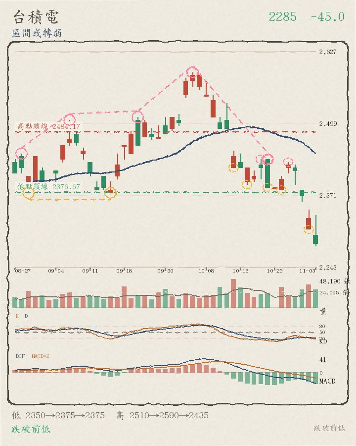
13:31 盤中 2285（-1.93%），比加權指數強 1.90 個百分點、跌破月線 2456.5，離高點頸線 2484.17 還差 8.0%，轉折還沒走出明顯方向。
- 月線位置：現價 2285 在月線 2456.5 之下（-7.0%）；5 日線 2388 也在月線之下（短均在下）；月線向下
- 量能：以已過交易時間推估，今天成交量約是 20 日均量的 1.24 倍（量增），比 20 日均量大不少；下跌卻量增，量價背離
- 關鍵價位：已跌破前一個轉折低點；高點頸線 2484.17 還在現價上方 8.0%；前一交易日高點 2345（低於 2.6%）；今天盤中高點 2335（低於 2.1%）；今天盤中低點 2280（高於 0.2%）
- 轉折結構：低點 2350、2375、2375 與高點 2510、2590、2435 都沒有明顯遞增，屬於區間震盪或轉弱；還沒確認的轉折低點 10-27 2380、11-02 2310；還沒確認的轉折高點 10-22 2435、10-28 2430（圖上虛線小圈）
聯發科 2454 上市
3670 -300.0（-7.56%）
底部墊高、未過前高 盤中成交值 382.45 億・全榜第 2 名（上市第 2 名）・相對大盤 -3.73
好條件 1/7：底底高
不好條件 7/7：跌破前低、今日下跌、相對大盤弱、在月線之下、貼近今日低點（1% 內）、跌破昨日低點、月線下彎
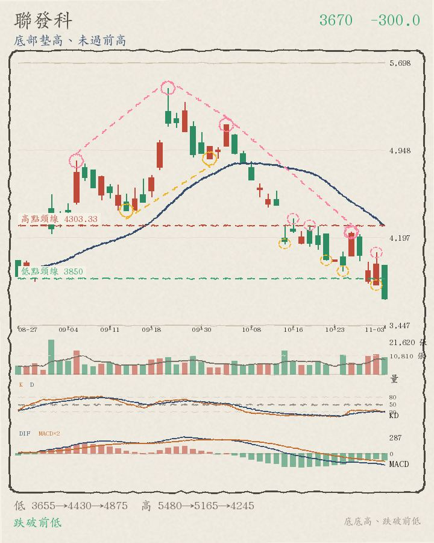
13:31 盤中 3670（-7.56%），比加權指數弱 3.73 個百分點、跌破月線 4362，離高點頸線 4303.33 還差 14.7%，底部還在墊高（但高點沒同步創高）。
- 月線位置：現價 3670 在月線 4362 之下（-15.9%）；5 日線 4025 也在月線之下（短均在下）；月線向下
- 量能：以已過交易時間推估，今天成交量約是 20 日均量的 1.43 倍（量增），比 20 日均量大不少；下跌卻量增，量價背離
- 關鍵價位：已跌破前一個轉折低點；高點頸線 4303.33 還在現價上方 14.7%；前一交易日高點 4070（低於 9.8%）；今天盤中高點 3960（低於 7.3%）；今天盤中低點 3665（高於 0.1%）
- 轉折結構：低點 3655、4430、4875 墊高（底底高），但高點 5480、5165、4245 沒有同步創高；還沒確認的轉折低點 10-27 3910、11-02 3790；還沒確認的轉折高點 10-28 4245、11-02 4070（圖上虛線小圈）
欣興 3037 上市
899 -98.0（-9.83%）
底部墊高、未過前高 盤中成交值 242.77 億・全榜第 3 名（上市第 3 名）・相對大盤 -6.00
好條件 1/7：底底高
不好條件 7/7：跌破前低、今日下跌、相對大盤弱、在月線之下、貼近今日低點（1% 內）、跌破昨日低點、月線下彎
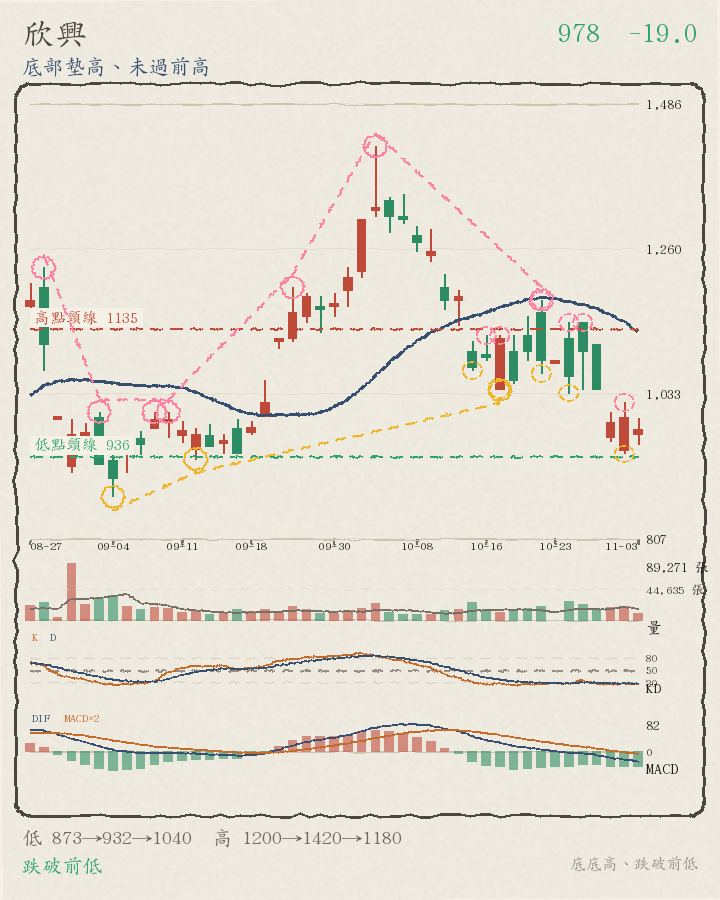
13:31 盤中 899（-9.83%），比加權指數弱 6.00 個百分點、跌破月線 1146.55，離高點頸線 1135 還差 20.8%，底部還在墊高（但高點沒同步創高）。
- 月線位置：現價 899 在月線 1146.55 之下（-21.6%）；5 日線 1037.2 也在月線之下（短均在下）；月線向下
- 量能：以已過交易時間推估，今天成交量約是 20 日均量的 1.59 倍（爆量），比 20 日均量大不少；下跌卻量增，量價背離
- 關鍵價位：已跌破前一個轉折低點；高點頸線 1135 還在現價上方 20.8%；前一交易日高點 1020（低於 11.9%）；今天盤中高點 996（低於 9.7%）；今天盤中低點 898（高於 0.1%）
- 轉折結構：低點 873、932、1040 墊高（底底高），但高點 1200、1420、1180 沒有同步創高；還沒確認的轉折低點 10-27 1035、11-02 940；還沒確認的轉折高點 10-28 1145、11-02 1020（圖上虛線小圈）
南亞 1303 上市
271 -30.0（-9.97%）
區間或轉弱 盤中成交值 236.47 億・全榜第 4 名（上市第 4 名）・相對大盤 -6.14
好條件 1/7：月線向上
不好條件 5/7：跌破前低、今日下跌、相對大盤弱、在月線之下、跌破昨日低點
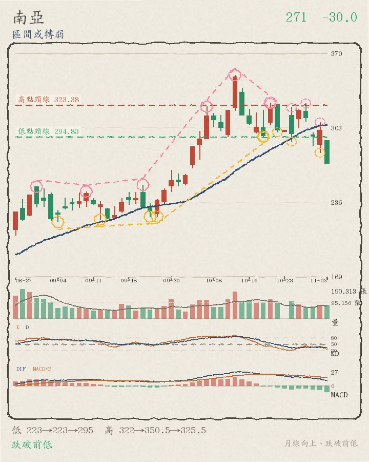
13:31 盤中 271（-9.97%），比加權指數弱 6.14 個百分點、跌破月線 305.15，離高點頸線 323.38 還差 16.2%，轉折還沒走出明顯方向。
- 月線位置：現價 271 在月線 305.15 之下（-11.2%）；5 日線 305.1 也在月線之下（短均在下）；月線向上
- 量能：以已過交易時間推估，今天成交量約是 20 日均量的 0.90 倍（量平），比 20 日均量少一些
- 關鍵價位：已跌破前一個轉折低點；高點頸線 323.38 還在現價上方 16.2%；前一交易日高點 308（低於 12.0%）；今天盤中高點 291.5（低於 7.0%）；今天盤中低點 271（高於 0.0%）
- 轉折結構：低點 223、223、295 與高點 322、350.5、325.5 都沒有明顯遞增，屬於區間震盪或轉弱；還沒確認的轉折低點 10-27 290.5、11-02 280.5；還沒確認的轉折高點 10-29 325、11-02 308（圖上虛線小圈）
南亞科 2408 上市
411 -45.5（-9.97%）
區間或轉弱 盤中成交值 200.6 億・全榜第 5 名（上市第 5 名）・相對大盤 -6.14
好條件 0/7：無
不好條件 6/7：跌破前低、今日下跌、相對大盤弱、在月線之下、跌破昨日低點、月線下彎
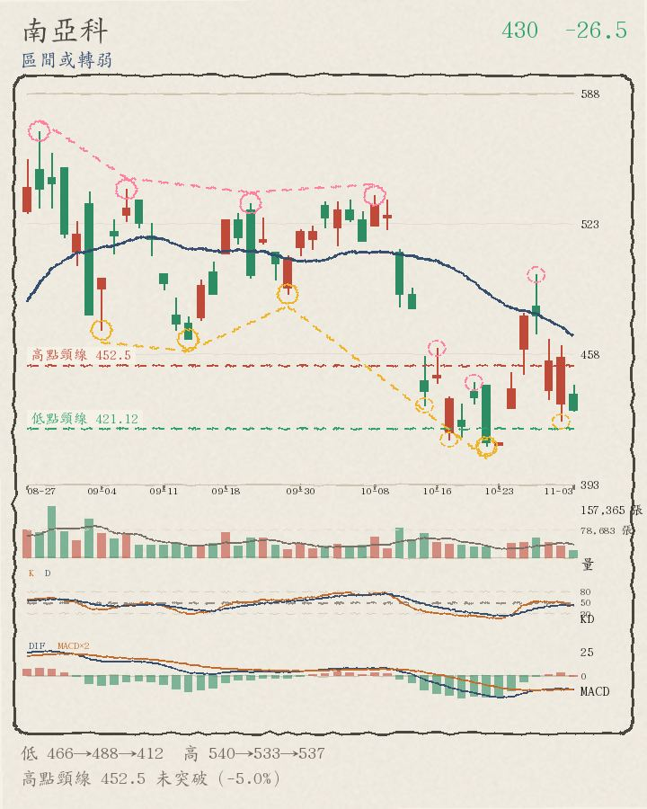
13:31 盤中 411（-9.97%），比加權指數弱 6.14 個百分點、跌破月線 471.9，離高點頸線 452.5 還差 9.2%，轉折還沒走出明顯方向。
- 月線位置：現價 411 在月線 471.9 之下（-12.9%）；5 日線 461.2 也在月線之下（短均在下）；月線向下
- 量能：以已過交易時間推估，今天成交量約是 20 日均量的 1.08 倍（量平），比 20 日均量大一些
- 關鍵價位：已跌破前一個轉折低點；高點頸線 452.5 還在現價上方 9.2%；前一交易日高點 462.5（低於 11.1%）；今天盤中高點 442.5（低於 7.1%）；今天盤中低點 411（高於 0.0%）
- 轉折結構：低點 465.5、488、412 與高點 540、533、537 都沒有明顯遞增，屬於區間震盪或轉弱；還沒確認的轉折低點 10-22 412、11-02 424.5；還沒確認的轉折高點 10-21 444、10-29 497.5（圖上虛線小圈）
台玻 1802 上市
67.8 +4.1（+6.44%）
區間或轉弱 盤中成交值 198.64 億・全榜第 6 名（上市第 6 名）・相對大盤 +10.27
好條件 3/7：站上月線、月線向上、攻擊量（量增＋上漲）
不好條件 0/7：無
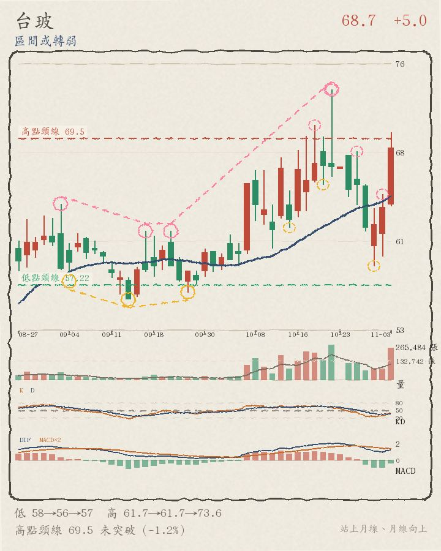
13:31 盤中 67.8（+6.44%），比加權指數強 10.27 個百分點、站上月線 64.185，離高點頸線 69.5 還差 2.4%，轉折還沒走出明顯方向。
- 月線位置：現價 67.8 在月線 64.185 之上（+5.6%）；5 日線 63.76 也在月線之下（短均在下）；月線向上
- 量能：以已過交易時間推估，今天成交量約是 20 日均量的 2.62 倍（爆量），比 20 日均量大不少；上漲又量增，量價配合
- 關鍵價位：高點頸線 69.5 還沒突破，差 2.4%；前一交易日高點 64.8（高於 4.6%）；今天盤中高點 70（低於 3.1%）；今天盤中低點 63.8（高於 6.3%）
- 轉折結構：低點 57.5、56、56.6 與高點 61.7、61.7、73.6 都沒有明顯遞增，屬於區間震盪或轉弱；還沒確認的轉折低點 10-21 65.6、10-30 58.8；還沒確認的轉折高點 10-28 68.4、11-02 64.8（圖上虛線小圈）
富喬 1815 上櫃
131 -8.0（-5.76%）
底部墊高、未過前高 盤中成交值 192.15 億・全榜第 7 名（上櫃第 1 名）・相對大盤 -1.93
好條件 2/7：月線向上、底底高
不好條件 3/7：今日下跌、相對大盤弱、在月線之下
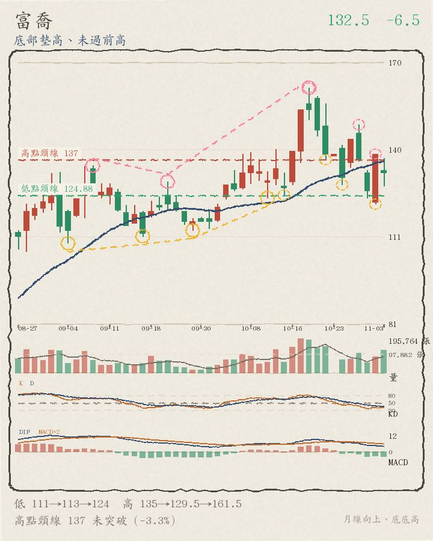
13:31 盤中 131（-5.76%），比加權指數弱 1.93 個百分點、跌破月線 135.95，離高點頸線 137 還差 4.4%，底部還在墊高（但高點沒同步創高）。
- 月線位置：現價 131 在月線 135.95 之下（-3.6%）；5 日線 135.5 也在月線之下（短均在下）；月線向上
- 量能：以已過交易時間推估，今天成交量約是 20 日均量的 1.50 倍（爆量），比 20 日均量大不少；下跌卻量增，量價背離
- 關鍵價位：高點頸線 137 還沒突破，差 4.4%；前一交易日高點 139（低於 5.8%）；今天盤中高點 137.5（低於 4.7%）；今天盤中低點 128（高於 2.3%）
- 轉折結構：低點 111、113、124 墊高（底底高），但高點 135、129.5、161.5 沒有同步創高；還沒確認的轉折低點 10-27 128.5、11-02 122；還沒確認的轉折高點 10-29 149、11-02 139（圖上虛線小圈）
國巨* 2327 上市
452.5 -46.0（-9.23%）
區間或轉弱 盤中成交值 186.73 億・全榜第 8 名（上市第 7 名）・相對大盤 -5.40
好條件 0/7：無
不好條件 7/7：跌破前低、今日下跌、相對大盤弱、在月線之下、貼近今日低點（1% 內）、跌破昨日低點、月線下彎
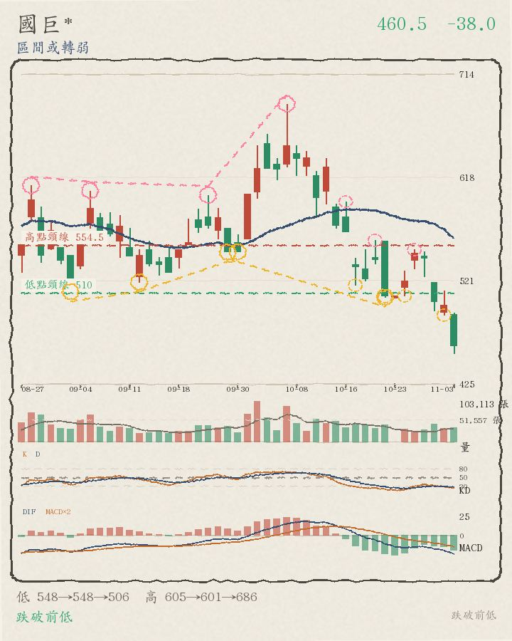
13:31 盤中 452.5（-9.23%），比加權指數弱 5.40 個百分點、跌破月線 569.275，離高點頸線 554.5 還差 18.4%，轉折還沒走出明顯方向。
- 月線位置：現價 452.5 在月線 569.275 之下（-20.5%）；5 日線 522.3 也在月線之下（短均在下）；月線向下
- 量能：以已過交易時間推估，今天成交量約是 20 日均量的 0.87 倍（量平），比 20 日均量少一些
- 關鍵價位：已跌破前一個轉折低點；高點頸線 554.5 還在現價上方 18.4%；前一交易日高點 512（低於 11.6%）；今天盤中高點 491（低於 7.8%）；今天盤中低點 452（高於 0.1%）
- 轉折結構：低點 548、548、506 與高點 605、601、686 都沒有明顯遞增，屬於區間震盪或轉弱；還沒確認的轉折低點 10-27 507、11-02 489；還沒確認的轉折高點 10-21 559、10-28 550（圖上虛線小圈）
創意 3443 上市
6740 -545.0（-7.48%）
區間或轉弱 盤中成交值 163.44 億・全榜第 9 名（上市第 8 名）・相對大盤 -3.65
好條件 0/7：無
不好條件 7/7：跌破前低、今日下跌、相對大盤弱、在月線之下、貼近今日低點（1% 內）、跌破昨日低點、月線下彎
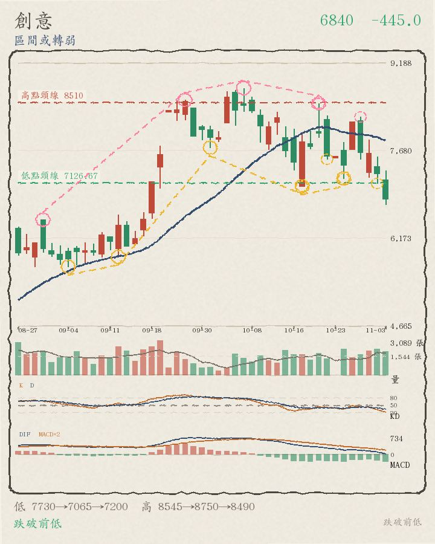
13:31 盤中 6740（-7.48%），比加權指數弱 3.65 個百分點、跌破月線 7909.5，離高點頸線 8510 還差 20.8%，轉折還沒走出明顯方向。
- 月線位置：現價 6740 在月線 7909.5 之下（-14.8%）；5 日線 7632 也在月線之下（短均在下）；月線向下
- 量能：以已過交易時間推估，今天成交量約是 20 日均量的 1.62 倍（爆量），比 20 日均量大不少；下跌卻量增，量價背離
- 關鍵價位：已跌破前一個轉折低點；高點頸線 8510 還在現價上方 20.8%；前一交易日高點 7575（低於 11.0%）；今天盤中高點 7335（低於 8.1%）；今天盤中低點 6710（高於 0.4%）
- 轉折結構：低點 7730、7065、7200 與高點 8545、8750、8490 都沒有明顯遞增，屬於區間震盪或轉弱；還沒確認的轉折低點 10-27 7200、11-02 7115；還沒確認的轉折高點 10-21 8490、10-29 8255（圖上虛線小圈）
聯電 2303 上市
102 -8.0（-7.27%）
底部墊高、未過前高 盤中成交值 163.34 億・全榜第 10 名（上市第 9 名）・相對大盤 -3.44
好條件 1/7：底底高
不好條件 6/7：跌破前低、今日下跌、相對大盤弱、在月線之下、跌破昨日低點、月線下彎
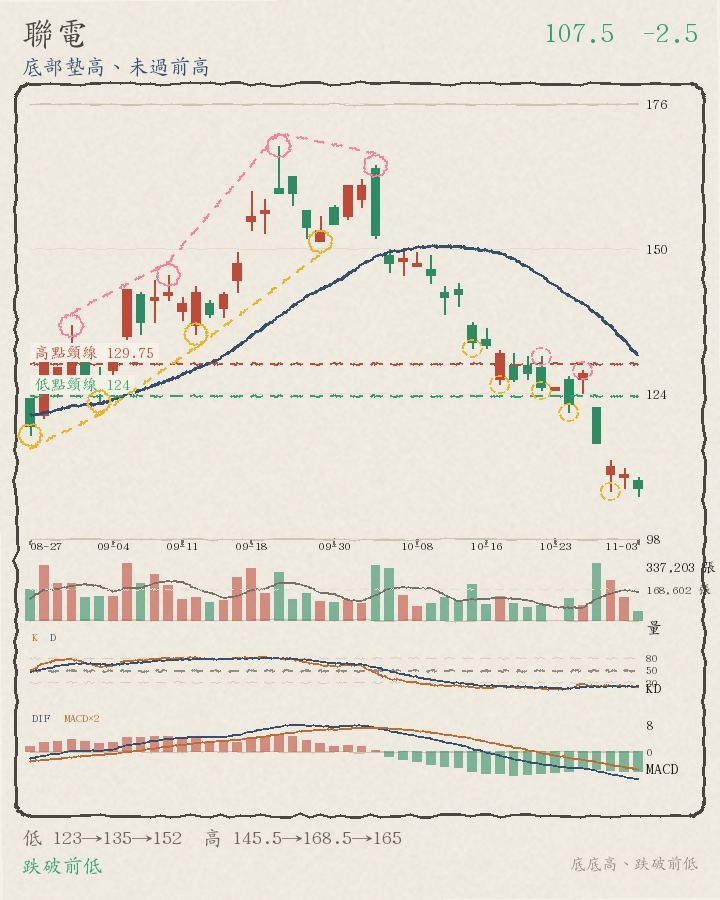
13:31 盤中 102（-7.27%），比加權指數弱 3.44 個百分點、跌破月線 133.9，離高點頸線 129.75 還差 21.4%，底部還在墊高（但高點沒同步創高）。
- 月線位置：現價 102 在月線 133.9 之下（-23.8%）；5 日線 117.5 也在月線之下（短均在下）；月線向下
- 量能：以已過交易時間推估，今天成交量約是 20 日均量的 1.06 倍（量平），比 20 日均量大一些
- 關鍵價位：已跌破前一個轉折低點；高點頸線 129.75 還在現價上方 21.4%；前一交易日高點 111（低於 8.1%）；今天盤中高點 109.5（低於 6.8%）；今天盤中低點 102（高於 0.0%）
- 轉折結構：低點 123、135、151.5 墊高（底底高），但高點 145.5、168.5、165 沒有同步創高；還沒確認的轉折低點 10-27 121、10-30 107；還沒確認的轉折高點 10-22 131、10-28 128.5（圖上虛線小圈）
台達電 2308 上市
1270 -85.0（-6.27%）
高點墊高、底部不穩 盤中成交值 162.03 億・全榜第 11 名（上市第 10 名）・相對大盤 -2.44
好條件 1/7：頭頭高
不好條件 6/7：跌破前低、今日下跌、相對大盤弱、在月線之下、貼近今日低點（1% 內）、月線下彎
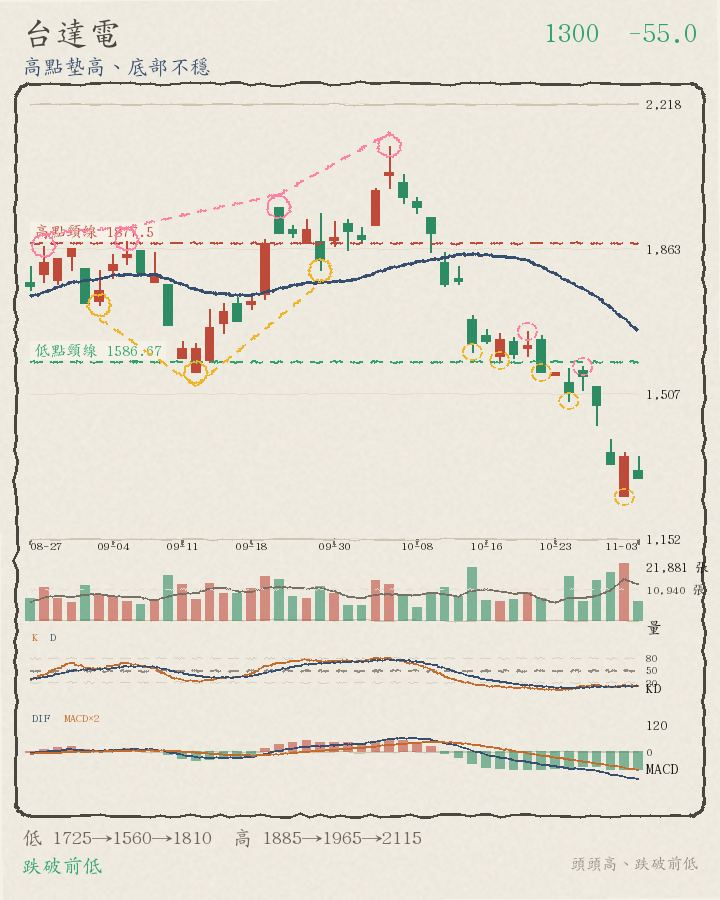
13:31 盤中 1270（-6.27%），比加權指數弱 2.44 個百分點、跌破月線 1692，離高點頸線 1877.5 還差 32.4%，高點還在墊高（但底部沒同步墊高）。
- 月線位置：現價 1270 在月線 1692 之下（-24.9%）；5 日線 1446 也在月線之下（短均在下）；月線向下
- 量能：以已過交易時間推估，今天成交量約是 20 日均量的 1.19 倍（量增），比 20 日均量大不少；下跌卻量增，量價背離
- 關鍵價位：已跌破前一個轉折低點；高點頸線 1877.5 還在現價上方 32.4%；前一交易日高點 1365（低於 7.0%）；今天盤中高點 1355（低於 6.3%）；今天盤中低點 1265（高於 0.4%）
- 轉折結構：高點 1885、1965、2115 墊高（頭頭高），但低點 1725、1560、1810 沒有同步墊高；還沒確認的轉折低點 10-27 1490、11-02 1255；還沒確認的轉折高點 10-21 1660、10-28 1575（圖上虛線小圈）
日月光投控 3711 上市
614 -60.0（-8.90%）
高點墊高、底部不穩 盤中成交值 150.4 億・全榜第 12 名（上市第 11 名）・相對大盤 -5.07
好條件 1/7：頭頭高
不好條件 7/7：跌破前低、今日下跌、相對大盤弱、在月線之下、貼近今日低點（1% 內）、跌破昨日低點、月線下彎
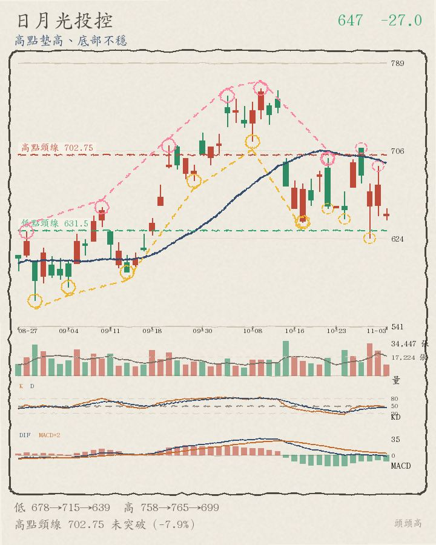
13:31 盤中 614（-8.90%），比加權指數弱 5.07 個百分點、跌破月線 698.05，離高點頸線 702.75 還差 12.6%，高點還在墊高（但底部沒同步墊高）。
- 月線位置：現價 614 在月線 698.05 之下（-12.0%）；5 日線 674.2 也在月線之下（短均在下）；月線向下
- 量能：以已過交易時間推估，今天成交量約是 20 日均量的 1.52 倍（爆量），比 20 日均量大不少；下跌卻量增，量價背離
- 關鍵價位：已跌破前一個轉折低點；高點頸線 702.75 還在現價上方 12.6%；前一交易日高點 692（低於 11.3%）；今天盤中高點 652（低於 5.8%）；今天盤中低點 612（高於 0.3%）
- 轉折結構：高點 758、765、699 墊高（頭頭高），但低點 678、715、639 沒有同步墊高；還沒確認的轉折低點 10-27 642、10-30 624；還沒確認的轉折高點 10-29 709、11-02 692（圖上虛線小圈）
臻鼎-KY 4958 上市
443 -44.0（-9.03%）
底部墊高、未過前高 盤中成交值 149.21 億・全榜第 13 名（上市第 12 名）・相對大盤 -5.20
好條件 2/7：月線向上、底底高
不好條件 6/7：跌破前低、今日下跌、相對大盤弱、在月線之下、貼近今日低點（1% 內）、跌破昨日低點
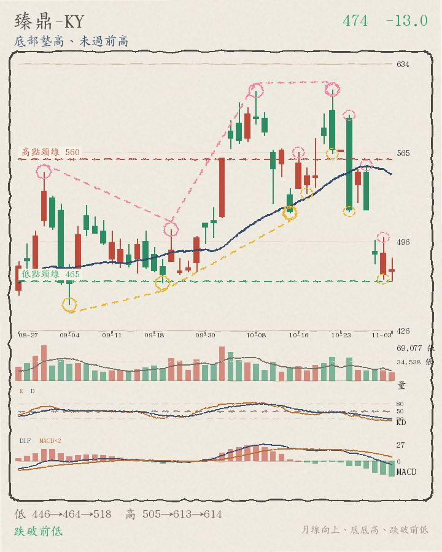
13:31 盤中 443（-9.03%），比加權指數弱 5.20 個百分點、跌破月線 552.15，離高點頸線 560 還差 20.9%，底部還在墊高（但高點沒同步創高）。
- 月線位置：現價 443 在月線 552.15 之下（-19.8%）；5 日線 512.6 也在月線之下（短均在下）；月線向上
- 量能：以已過交易時間推估，今天成交量約是 20 日均量的 1.04 倍（量平），跟 20 日均量差不多
- 關鍵價位：已跌破前一個轉折低點；高點頸線 560 還在現價上方 20.9%；前一交易日高點 499（低於 11.2%）；今天盤中高點 483（低於 8.3%）；今天盤中低點 440（高於 0.7%）
- 轉折結構：低點 446.5、463.5、518 墊高（底底高），但高點 505、613、614 沒有同步創高；還沒確認的轉折低點 10-27 519、11-02 466.5；還沒確認的轉折高點 10-29 555、11-02 499（圖上虛線小圈）
聯茂 6213 上市
597 -59.0（-8.99%）
高點墊高、底部不穩 盤中成交值 143.18 億・全榜第 14 名（上市第 13 名）・相對大盤 -5.16
好條件 2/7：月線向上、頭頭高
不好條件 5/7：跌破前低、今日下跌、相對大盤弱、在月線之下、跌破昨日低點
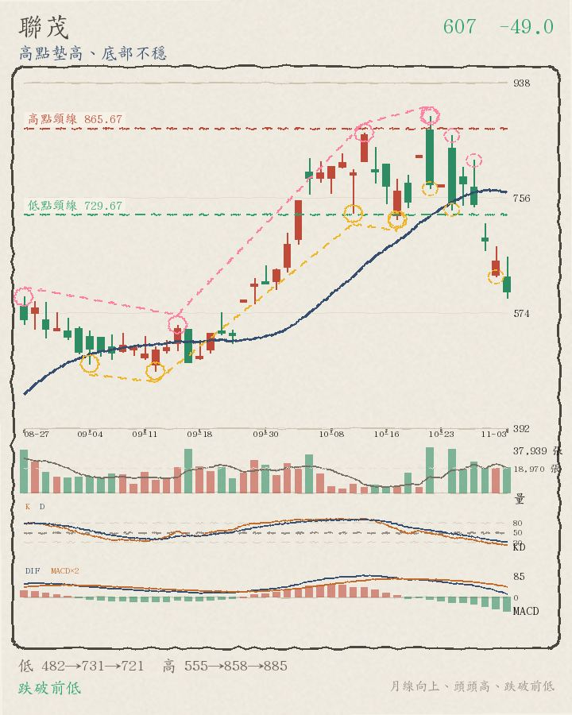
13:31 盤中 597（-8.99%），比加權指數弱 5.16 個百分點、跌破月線 768.2，離高點頸線 865.67 還差 31.0%，高點還在墊高（但底部沒同步墊高）。
- 月線位置：現價 597 在月線 768.2 之下（-22.3%）；5 日線 722.4 也在月線之下（短均在下）；月線向上
- 量能：以已過交易時間推估，今天成交量約是 20 日均量的 1.52 倍（爆量），比 20 日均量大不少；下跌卻量增，量價背離
- 關鍵價位：已跌破前一個轉折低點；高點頸線 865.67 還在現價上方 31.0%；前一交易日高點 679（低於 12.1%）；今天盤中高點 662（低於 9.8%）；今天盤中低點 597（高於 0.0%）
- 轉折結構：高點 555、858、885 墊高（頭頭高），但低點 482、731、721 沒有同步墊高；還沒確認的轉折低點 10-27 737、11-02 631；還沒確認的轉折高點 10-27 854、10-29 815（圖上虛線小圈）
景碩 3189 上市
819 -91.0（-10.00%）
底部墊高、未過前高 盤中成交值 140.88 億・全榜第 15 名（上市第 14 名）・相對大盤 -6.17
好條件 1/7：底底高
不好條件 6/7：跌破前低、今日下跌、相對大盤弱、在月線之下、跌破昨日低點、月線下彎
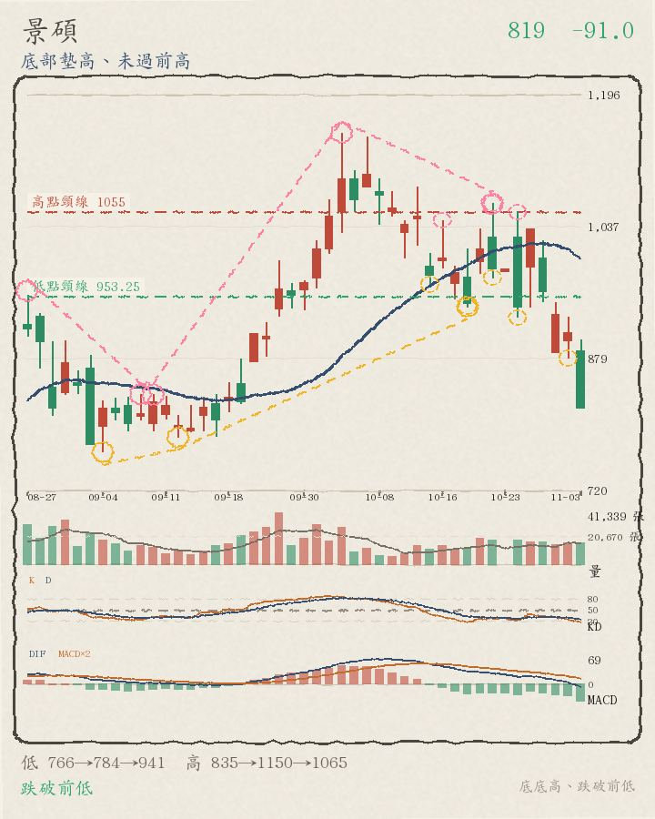
13:31 盤中 819（-10.00%），比加權指數弱 6.17 個百分點、跌破月線 1010.25，離高點頸線 1055 還差 22.4%，底部還在墊高（但高點沒同步創高）。
- 月線位置：現價 819 在月線 1010.25 之下（-18.9%）；5 日線 955.4 也在月線之下（短均在下）；月線向下
- 量能：以已過交易時間推估，今天成交量約是 20 日均量的 1.09 倍（量平），比 20 日均量大一些
- 關鍵價位：已跌破前一個轉折低點；高點頸線 1055 還在現價上方 22.4%；前一交易日高點 928（低於 11.7%）；今天盤中高點 901（低於 9.1%）；今天盤中低點 819（高於 0.0%）
- 轉折結構：低點 766、784、941 墊高（底底高），但高點 835、1150、1065 沒有同步創高；還沒確認的轉折低點 10-27 928、11-02 879；還沒確認的轉折高點 10-22 1065、10-27 1055（圖上虛線小圈）
大立光 3008 上市
4945 -545.0（-9.93%）
區間或轉弱 盤中成交值 130.84 億・全榜第 16 名（上市第 15 名）・相對大盤 -6.10
好條件 0/7：無
不好條件 6/7：跌破前低、今日下跌、相對大盤弱、在月線之下、跌破昨日低點、月線下彎
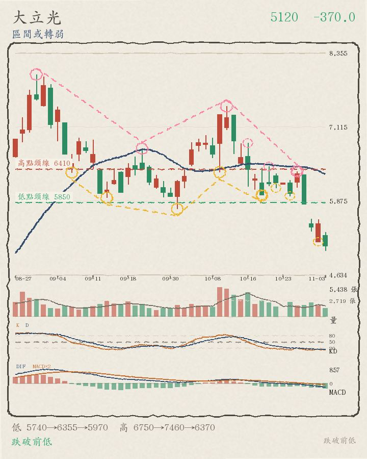
13:31 盤中 4945（-9.93%），比加權指數弱 6.10 個百分點、跌破月線 6383.75，離高點頸線 6410 還差 22.9%，轉折還沒走出明顯方向。
- 月線位置：現價 4945 在月線 6383.75 之下（-22.5%）；5 日線 5814 也在月線之下（短均在下）；月線向下
- 量能：以已過交易時間推估，今天成交量約是 20 日均量的 0.97 倍（量平），跟 20 日均量差不多
- 關鍵價位：已跌破前一個轉折低點；高點頸線 6410 還在現價上方 22.9%；前一交易日高點 5560（低於 11.1%）；今天盤中高點 5350（低於 7.6%）；今天盤中低點 4945（高於 0.0%）
- 轉折結構：低點 5740、6355、5970 與高點 6750、7460、6370 都沒有明顯遞增，屬於區間震盪或轉弱；還沒確認的轉折低點 10-27 5960、11-02 5190；還沒確認的轉折高點 10-21 6450、10-28 6370（圖上虛線小圈）
華邦電 2344 上市
146 -16.0（-9.88%）
區間或轉弱 盤中成交值 128.65 億・全榜第 17 名（上市第 16 名）・相對大盤 -6.05
好條件 0/7：無
不好條件 6/7：跌破前低、今日下跌、相對大盤弱、在月線之下、跌破昨日低點、月線下彎
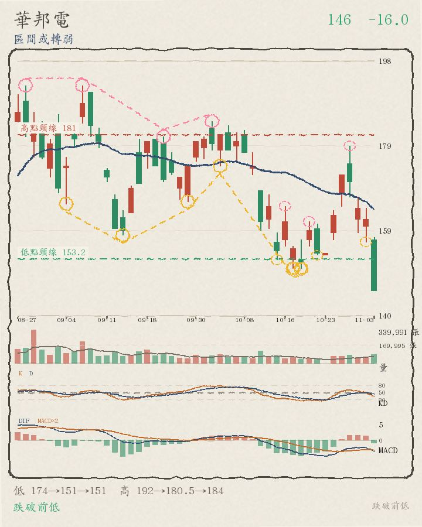
13:31 盤中 146（-9.88%），比加權指數弱 6.05 個百分點、跌破月線 165.975，離高點頸線 181 還差 19.3%，轉折還沒走出明顯方向。
- 月線位置：現價 146 在月線 165.975 之下（-12.0%）；5 日線 166.4 也在月線之上（短均在上）；月線向下
- 量能：以已過交易時間推估，今天成交量約是 20 日均量的 1.37 倍（量增），比 20 日均量大不少；下跌卻量增，量價背離
- 關鍵價位：已跌破前一個轉折低點；高點頸線 181 還在現價上方 19.3%；前一交易日高點 164.5（低於 11.2%）；今天盤中高點 158（低於 7.6%）；今天盤中低點 146（高於 0.0%）
- 轉折結構：低點 174、151、151 與高點 192、180.5、184 都沒有明顯遞增，屬於區間震盪或轉弱；還沒確認的轉折低點 10-22 154、11-02 157；還沒確認的轉折高點 10-21 161.5、10-29 178.5（圖上虛線小圈）
台光電 2383 上市
4365 -340.0（-7.23%）
底部墊高、未過前高 盤中成交值 124.4 億・全榜第 18 名（上市第 17 名）・相對大盤 -3.40
好條件 1/7：底底高
不好條件 7/7：跌破前低、今日下跌、相對大盤弱、在月線之下、貼近今日低點（1% 內）、跌破昨日低點、月線下彎
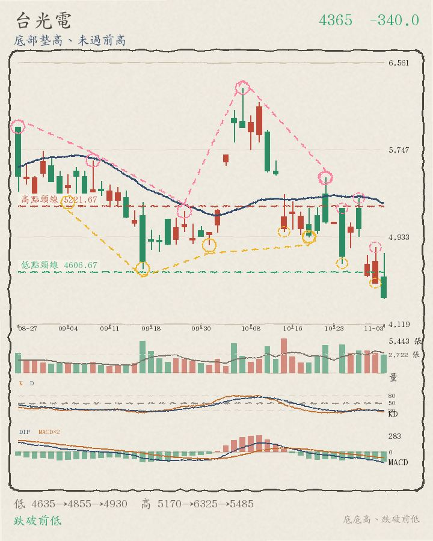
13:31 盤中 4365（-7.23%），比加權指數弱 3.40 個百分點、跌破月線 5284.75，離高點頸線 5221.67 還差 16.4%，底部還在墊高（但高點沒同步創高）。
- 月線位置：現價 4365 在月線 5284.75 之下（-17.4%）；5 日線 4833 也在月線之下（短均在下）；月線向下
- 量能：以已過交易時間推估，今天成交量約是 20 日均量的 1.00 倍（量平），跟 20 日均量差不多
- 關鍵價位：已跌破前一個轉折低點；高點頸線 5221.67 還在現價上方 16.4%；前一交易日高點 4835（低於 9.7%）；今天盤中高點 4780（低於 8.7%）；今天盤中低點 4355（高於 0.2%）
- 轉折結構：低點 4635、4855、4930 墊高（底底高），但高點 5170、6325、5485 沒有同步創高；還沒確認的轉折低點 10-27 4685、11-02 4500；還沒確認的轉折高點 10-29 5295、11-02 4835（圖上虛線小圈）
穩懋 3105 上櫃
530 -58.0（-9.86%）
區間或轉弱 盤中成交值 123.9 億・全榜第 19 名（上櫃第 2 名）・相對大盤 -6.03
好條件 1/7：月線向上
不好條件 4/7：今日下跌、相對大盤弱、在月線之下、跌破昨日低點

13:31 盤中 530（-9.86%），比加權指數弱 6.03 個百分點、跌破月線 544.75，離高點頸線 595 還差 10.9%，轉折還沒走出明顯方向。
- 月線位置：現價 530 在月線 544.75 之下（-2.7%）；5 日線 558.2 也在月線之上（短均在上）；月線向上
- 量能：以已過交易時間推估，今天成交量約是 20 日均量的 0.96 倍（量平），跟 20 日均量差不多
- 關鍵價位：高點頸線 595 還沒突破，差 10.9%；前一交易日高點 596（低於 11.1%）；今天盤中高點 564（低於 6.0%）；今天盤中低點 530（高於 0.0%）
- 轉折結構：低點 482、454、479 與高點 492、478、630 都沒有明顯遞增，屬於區間震盪或轉弱；還沒確認的轉折低點 10-27 479、10-30 541；還沒確認的轉折高點 10-29 594、11-02 596（圖上虛線小圈）
台燿 6274 上櫃
1090 -120.0（-9.92%）
高點墊高、底部不穩 盤中成交值 121.43 億・全榜第 20 名（上櫃第 3 名）・相對大盤 -6.09
好條件 1/7：頭頭高
不好條件 6/7：跌破前低、今日下跌、相對大盤弱、在月線之下、跌破昨日低點、月線下彎
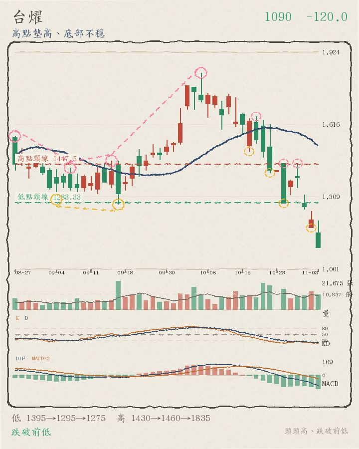
13:31 盤中 1090（-9.92%），比加權指數弱 6.09 個百分點、跌破月線 1551，離高點頸線 1447.5 還差 24.7%，高點還在墊高（但底部沒同步墊高）。
- 月線位置：現價 1090 在月線 1551 之下（-29.7%）；5 日線 1304 也在月線之下（短均在下）；月線向下
- 量能：以已過交易時間推估，今天成交量約是 20 日均量的 1.00 倍（量平），跟 20 日均量差不多
- 關鍵價位：已跌破前一個轉折低點；高點頸線 1447.5 還在現價上方 24.7%；前一交易日高點 1245（低於 12.4%）；今天盤中高點 1205（低於 9.5%）；今天盤中低點 1090（高於 0.0%）
- 轉折結構：高點 1430、1460、1835 墊高（頭頭高），但低點 1395、1295、1275 沒有同步墊高；還沒確認的轉折低點 10-27 1280、11-02 1175；還沒確認的轉折高點 10-27 1450、10-29 1450（圖上虛線小圈）
健策 3653 上市
6005 -315.0（-4.98%）
區間或轉弱 盤中成交值 108.39 億・全榜第 21 名（上市第 18 名）・相對大盤 -1.15
好條件 0/7：無
不好條件 6/7：今日下跌、相對大盤弱、在月線之下、貼近今日低點（1% 內）、跌破昨日低點、月線下彎
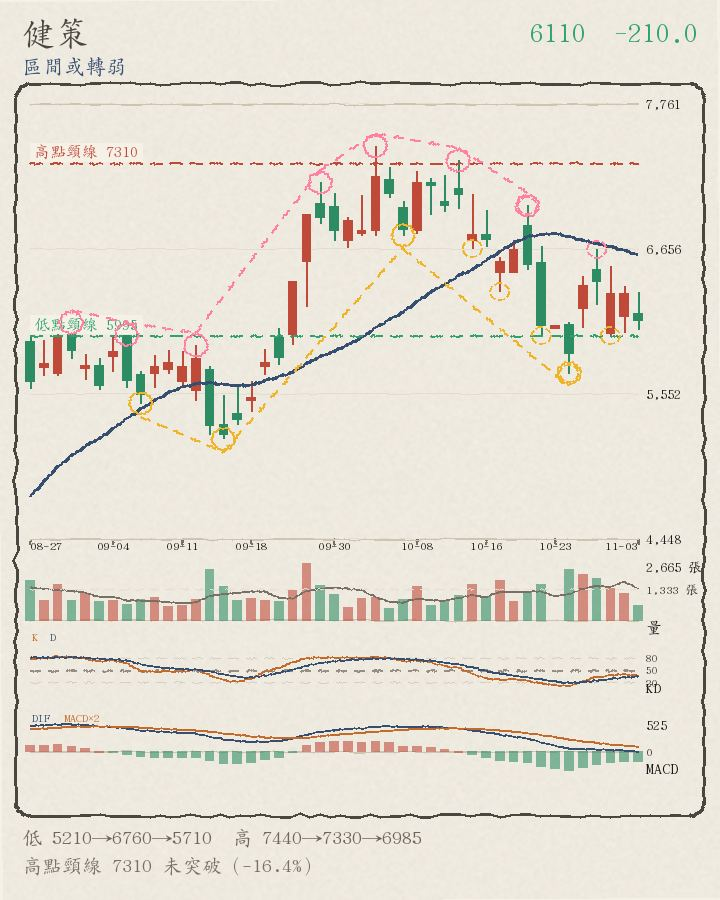
13:31 盤中 6005（-4.98%），比加權指數弱 1.15 個百分點、跌破月線 6646.5，離高點頸線 7310 還差 17.9%，轉折還沒走出明顯方向。
- 月線位置：現價 6005 在月線 6646.5 之下（-9.7%）；5 日線 6255 也在月線之下（短均在下）；月線向下
- 量能：以已過交易時間推估，今天成交量約是 20 日均量的 1.39 倍（量增），比 20 日均量大不少；下跌卻量增，量價背離
- 關鍵價位：高點頸線 7310 還沒突破，差 17.9%；前一交易日高點 6370（低於 5.7%）；今天盤中高點 6475（低於 7.3%）；今天盤中低點 6000（高於 0.1%）
- 轉折結構：低點 5210、6760、5710 與高點 7440、7330、6985 都沒有明顯遞增，屬於區間震盪或轉弱；還沒確認的轉折低點 10-27 5710、10-30 5995；還沒確認的轉折高點 10-21 6985、10-29 6655（圖上虛線小圈）
量增
↑ 回上方清單
金像電 2368 上市
962 -98.0（-9.25%）
區間或轉弱 盤中成交值 103.1 億・全榜第 22 名（上市第 19 名）・相對大盤 -5.42
好條件 0/7：無
不好條件 7/7：跌破前低、今日下跌、相對大盤弱、在月線之下、貼近今日低點（1% 內）、跌破昨日低點、月線下彎
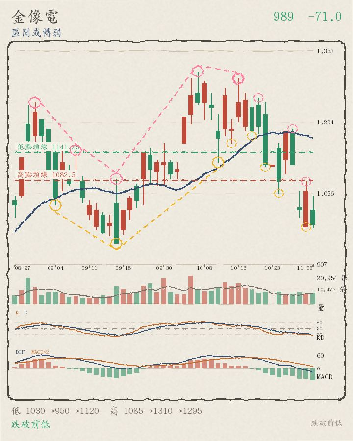
13:31 盤中 962（-9.25%），比加權指數弱 5.42 個百分點、跌破月線 1176.5，離高點頸線 1082.5 還差 11.1%，轉折還沒走出明顯方向。
- 月線位置：現價 962 在月線 1176.5 之下（-18.2%）；5 日線 1092 也在月線之下（短均在下）；月線向下
- 量能：以已過交易時間推估，今天成交量約是 20 日均量的 1.00 倍（量平），跟 20 日均量差不多
- 關鍵價位：已跌破前一個轉折低點；高點頸線 1082.5 還在現價上方 11.1%；前一交易日高點 1080（低於 10.9%）；今天盤中高點 1050（低於 8.4%）；今天盤中低點 960（高於 0.2%）
- 轉折結構：低點 1030、950、1120 與高點 1085、1310、1295 都沒有明顯遞增，屬於區間震盪或轉弱；還沒確認的轉折低點 10-27 1055、11-02 984；還沒確認的轉折高點 10-29 1190、11-02 1080（圖上虛線小圈）
南電 8046 上市
1070 -115.0（-9.70%）
底部墊高、未過前高 盤中成交值 99.27 億・全榜第 23 名（上市第 20 名）・相對大盤 -5.87
好條件 1/7：底底高
不好條件 5/7：今日下跌、相對大盤弱、在月線之下、跌破昨日低點、月線下彎
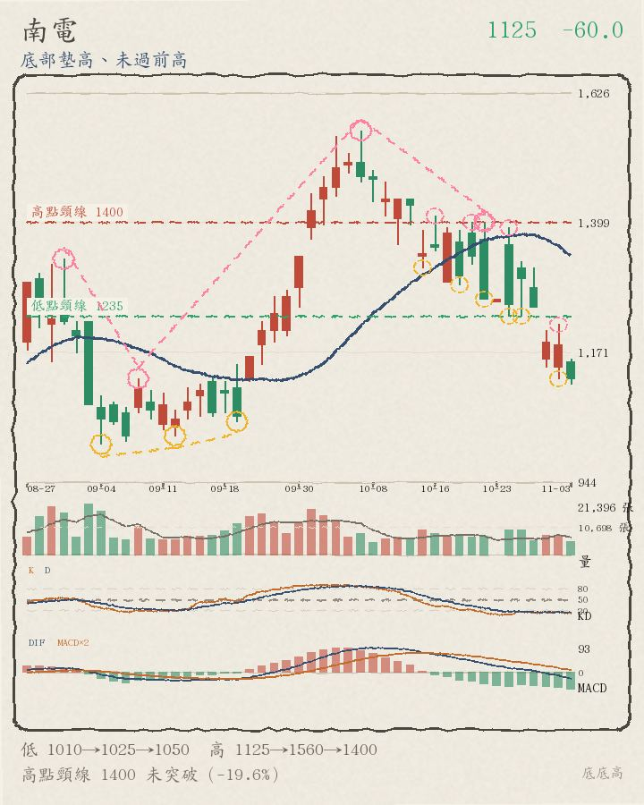
13:31 盤中 1070（-9.70%），比加權指數弱 5.87 個百分點、跌破月線 1358，離高點頸線 1400 還差 23.6%，底部還在墊高（但高點沒同步創高）。
- 月線位置：現價 1070 在月線 1358 之下（-21.2%）；5 日線 1236 也在月線之下（短均在下）；月線向下
- 量能：以已過交易時間推估，今天成交量約是 20 日均量的 1.00 倍（量平），跟 20 日均量差不多
- 關鍵價位：高點頸線 1400 還沒突破，差 23.6%；前一交易日高點 1220（低於 12.3%）；今天盤中高點 1160（低於 7.8%）；今天盤中低點 1070（高於 0.0%）
- 轉折結構：低點 1010、1025、1050 墊高（底底高），但高點 1125、1560、1400 沒有同步創高；還沒確認的轉折低點 10-28 1235、11-02 1125；還沒確認的轉折高點 10-27 1390、11-02 1220（圖上虛線小圈）
鴻海 2317 上市
244 -7.0（-2.79%）
區間或轉弱 盤中成交值 89.06 億・全榜第 24 名（上市第 21 名）・相對大盤 +1.04
好條件 0/7：無
不好條件 4/7：今日下跌、在月線之下、貼近今日低點（1% 內）、月線下彎
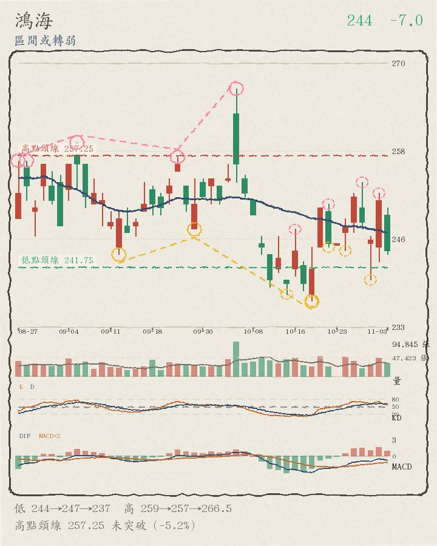
13:31 盤中 244（-2.79%），比加權指數強 1.04 個百分點、跌破月線 246.875，離高點頸線 257.25 還差 5.2%，轉折還沒走出明顯方向。
- 月線位置：現價 244 在月線 246.875 之下（-1.2%）；5 日線 248.7 也在月線之上（短均在上）；月線向下
- 量能：以已過交易時間推估，今天成交量約是 20 日均量的 0.90 倍（量平），比 20 日均量少一些
- 關鍵價位：高點頸線 257.25 還沒突破，差 5.2%；前一交易日高點 252（低於 3.2%）；今天盤中高點 250（低於 2.4%）；今天盤中低點 243.5（高於 0.2%）
- 轉折結構：低點 243.5、247、237 與高點 259、257、266.5 都沒有明顯遞增，屬於區間震盪或轉弱；還沒確認的轉折低點 10-27 244、10-30 240；還沒確認的轉折高點 10-29 253.5、11-02 252（圖上虛線小圈）
量平
↑ 回上方清單
聯亞 3081 上櫃
2175 -240.0（-9.94%）
高點墊高、底部不穩 盤中成交值 85.22 億・全榜第 25 名（上櫃第 4 名）・相對大盤 -6.11
好條件 1/7：頭頭高
不好條件 6/7：跌破前低、今日下跌、相對大盤弱、在月線之下、跌破昨日低點、月線下彎
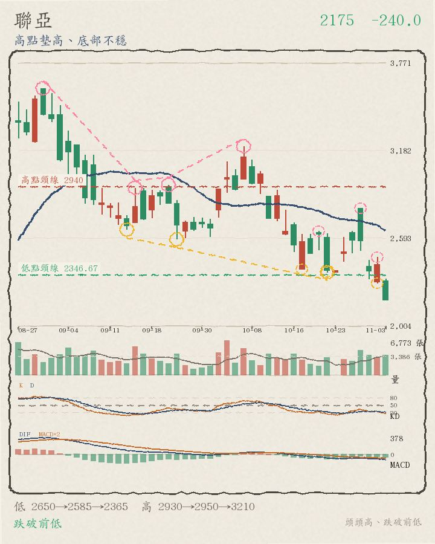
13:31 盤中 2175（-9.94%），比加權指數弱 6.11 個百分點、跌破月線 2681.75，離高點頸線 2940 還差 26.0%，高點還在墊高（但底部沒同步墊高）。
- 月線位置：現價 2175 在月線 2681.75 之下（-18.9%）；5 日線 2488 也在月線之下（短均在下）；月線向下
- 量能：以已過交易時間推估，今天成交量約是 20 日均量的 1.17 倍（量增），比 20 日均量大不少；下跌卻量增，量價背離
- 關鍵價位：已跌破前一個轉折低點；高點頸線 2940 還在現價上方 26.0%；前一交易日高點 2465（低於 11.8%）；今天盤中高點 2320（低於 6.2%）；今天盤中低點 2175（高於 0.0%）
- 轉折結構：高點 2930、2950、3210 墊高（頭頭高），但低點 2650、2585、2365 沒有同步墊高；還沒確認的轉折低點 10-22 2365、11-02 2290；還沒確認的轉折高點 10-29 2795、11-02 2465（圖上虛線小圈）
雙鴻 3324 上櫃
1315 -80.0（-5.73%）
區間或轉弱 盤中成交值 84.23 億・全榜第 26 名（上櫃第 5 名）・相對大盤 -1.90
好條件 0/7：無
不好條件 5/7：今日下跌、相對大盤弱、在月線之下、貼近今日低點（1% 內）、月線下彎
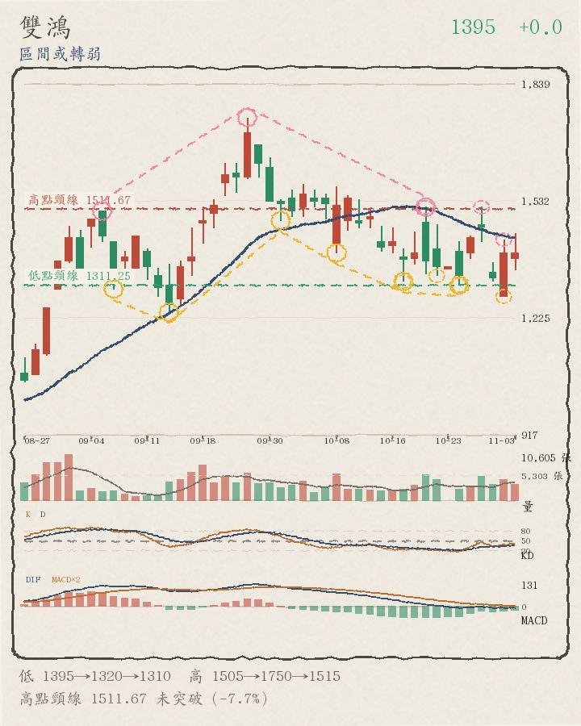
13:31 盤中 1315（-5.73%），比加權指數弱 1.90 個百分點、跌破月線 1440，離高點頸線 1511.67 還差 13.0%，轉折還沒走出明顯方向。
- 月線位置：現價 1315 在月線 1440 之下（-8.7%）；5 日線 1392 也在月線之下（短均在下）；月線向下
- 量能：以已過交易時間推估，今天成交量約是 20 日均量的 1.89 倍（爆量），比 20 日均量大不少；下跌卻量增，量價背離
- 關鍵價位：高點頸線 1511.67 還沒突破，差 13.0%；前一交易日高點 1430（低於 8.0%）；今天盤中高點 1445（低於 9.0%）；今天盤中低點 1305（高於 0.8%）
- 轉折結構：低點 1395、1320、1310 與高點 1505、1750、1515 都沒有明顯遞增，屬於區間震盪或轉弱；還沒確認的轉折低點 10-27 1310、11-02 1280；還沒確認的轉折高點 10-29 1515、11-02 1430（圖上虛線小圈）
玉晶光 3406 上市
935 -100.0（-9.66%）
高點墊高、底部不穩 盤中成交值 80.34 億・全榜第 27 名（上市第 22 名）・相對大盤 -5.83
好條件 2/7：月線向上、頭頭高
不好條件 6/7：跌破前低、今日下跌、相對大盤弱、在月線之下、貼近今日低點（1% 內）、跌破昨日低點
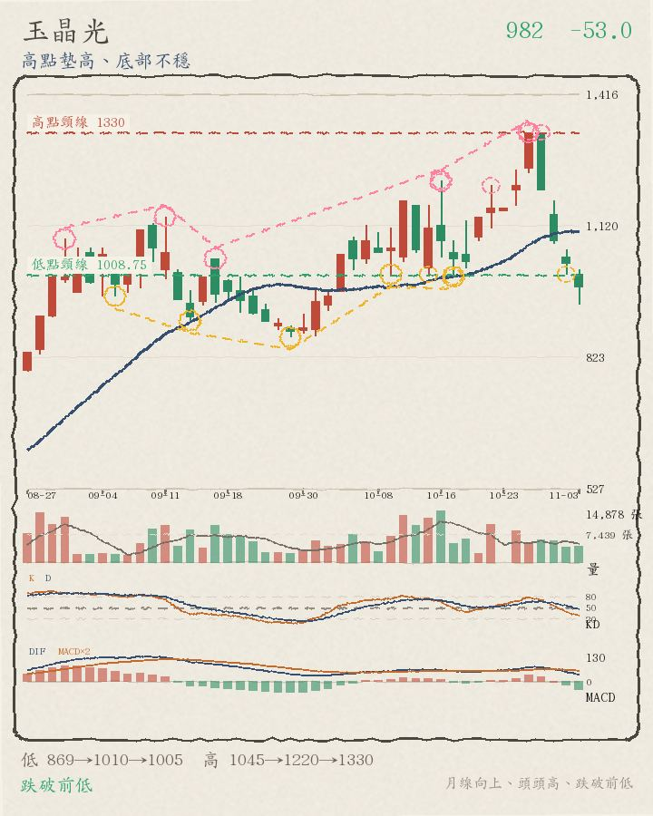
13:31 盤中 935（-9.66%），比加權指數弱 5.83 個百分點、跌破月線 1106.05，離高點頸線 1330 還差 29.7%，高點還在墊高（但底部沒同步墊高）。
- 月線位置：現價 935 在月線 1106.05 之下（-15.5%）；5 日線 1172 也在月線之上（短均在上）；月線向上
- 量能：以已過交易時間推估，今天成交量約是 20 日均量的 1.13 倍（量增），比 20 日均量大一些；下跌卻量增，量價背離
- 關鍵價位：已跌破前一個轉折低點；高點頸線 1330 還在現價上方 29.7%；前一交易日高點 1065（低於 12.2%）；今天盤中高點 1020（低於 8.3%）；今天盤中低點 932（高於 0.3%）
- 轉折結構：高點 1045、1220、1330 墊高（頭頭高），但低點 869、1010、1005 沒有同步墊高；還沒確認的轉折低點 10-19 1005、11-02 1010；還沒確認的轉折高點 10-28 1330、10-29 1330（圖上虛線小圈）
華新科 2492 上市
320.5 -35.5（-9.97%）
高點墊高、底部不穩 盤中成交值 79.18 億・全榜第 28 名（上市第 23 名）・相對大盤 -6.14
好條件 2/7：月線向上、頭頭高
不好條件 5/7：跌破前低、今日下跌、相對大盤弱、在月線之下、跌破昨日低點
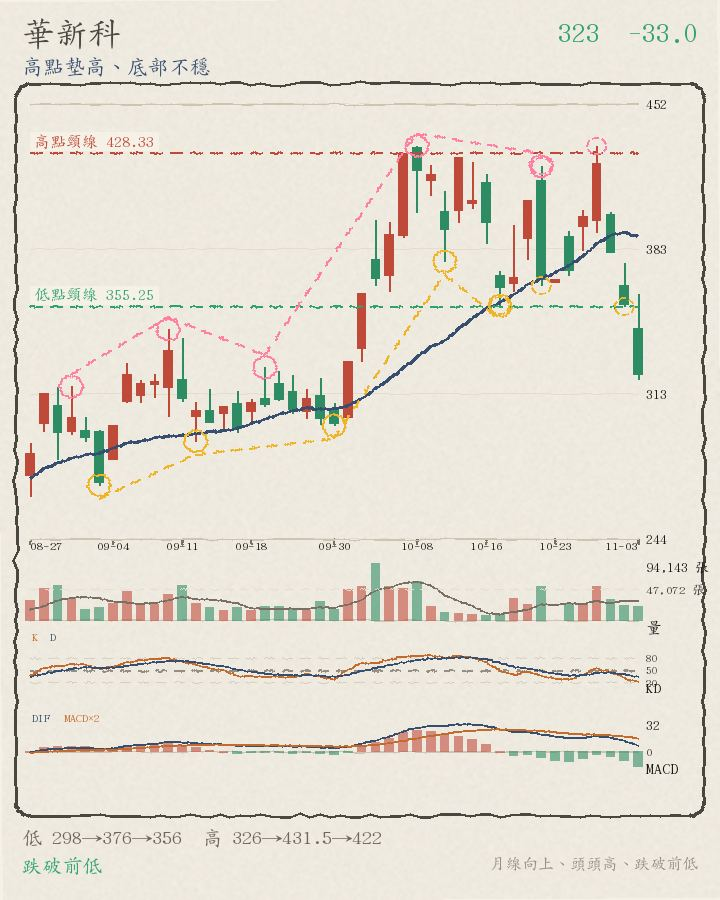
13:31 盤中 320.5（-9.97%），比加權指數弱 6.14 個百分點、跌破月線 390.45，離高點頸線 428.33 還差 25.2%，高點還在墊高（但底部沒同步墊高）。
- 月線位置：現價 320.5 在月線 390.45 之下（-17.9%）；5 日線 386.1 也在月線之下（短均在下）；月線向上
- 量能：以已過交易時間推估，今天成交量約是 20 日均量的 0.67 倍（量縮），比 20 日均量少很多
- 關鍵價位：已跌破前一個轉折低點；高點頸線 428.33 還在現價上方 25.2%；前一交易日高點 375.5（低於 14.6%）；今天盤中高點 361（低於 11.2%）；今天盤中低點 320.5（高於 0.0%）
- 轉折結構：高點 326、431.5、422 墊高（頭頭高），但低點 298.5、376.5、355.5 沒有同步墊高；還沒確認的轉折低點 10-22 365、11-02 355；還沒確認的轉折高點 10-22 422、10-29 431.5（圖上虛線小圈）
金居 8358 上櫃
376 -41.5（-9.94%）
區間或轉弱 盤中成交值 76.89 億・全榜第 29 名（上櫃第 6 名）・相對大盤 -6.11
好條件 0/7：無
不好條件 6/7：跌破前低、今日下跌、相對大盤弱、在月線之下、跌破昨日低點、月線下彎
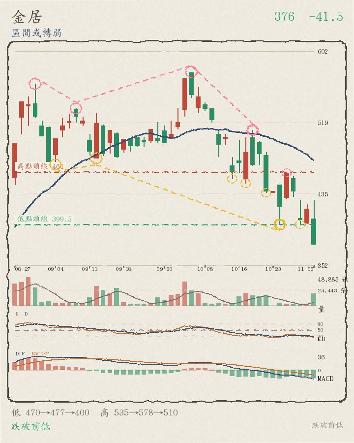
13:31 盤中 376（-9.94%），比加權指數弱 6.11 個百分點、跌破月線 481.425，離高點頸線 461 還差 18.4%，轉折還沒走出明顯方向。
- 月線位置：現價 376 在月線 481.425 之下（-21.9%）；5 日線 428.3 也在月線之下（短均在下）；月線向下
- 量能：以已過交易時間推估，今天成交量約是 20 日均量的 1.68 倍（爆量），比 20 日均量大不少；下跌卻量增，量價背離
- 關鍵價位：已跌破前一個轉折低點；高點頸線 461 還在現價上方 18.4%；前一交易日高點 423（低於 11.1%）；今天盤中高點 428（低於 12.1%）；今天盤中低點 376（高於 0.0%）
- 轉折結構：低點 469.5、477、399.5 與高點 535、578、510 都沒有明顯遞增，屬於區間震盪或轉弱；還沒確認的轉折低點 10-27 399.5、10-30 399.5；還沒確認的轉折高點 10-20 510、10-28 460（圖上虛線小圈）
奇鋐 3017 上市
2940 -120.0（-3.92%）
區間或轉弱 盤中成交值 76.76 億・全榜第 30 名（上市第 24 名）・相對大盤 -0.09
好條件 0/7：無
不好條件 7/7：跌破前低、今日下跌、相對大盤弱、在月線之下、貼近今日低點（1% 內）、跌破昨日低點、月線下彎
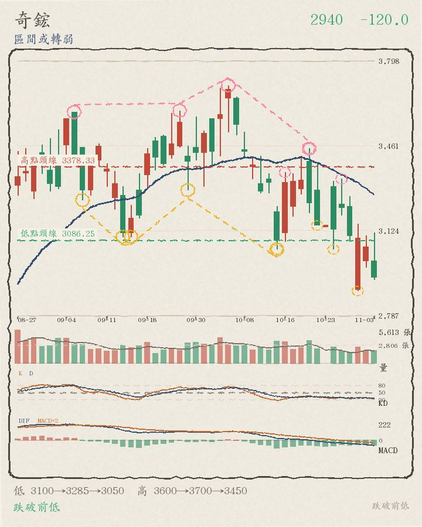
13:31 盤中 2940（-3.92%），比加權指數弱 0.09 個百分點、跌破月線 3292.5，離高點頸線 3378.33 還差 13.0%，轉折還沒走出明顯方向。
- 月線位置：現價 2940 在月線 3292.5 之下（-10.7%）；5 日線 3121 也在月線之下（短均在下）；月線向下
- 量能：以已過交易時間推估，今天成交量約是 20 日均量的 0.92 倍（量平），比 20 日均量少一些
- 關鍵價位：已跌破前一個轉折低點；高點頸線 3378.33 還在現價上方 13.0%；前一交易日高點 3105（低於 5.3%）；今天盤中高點 3115（低於 5.6%）；今天盤中低點 2920（高於 0.7%）
- 轉折結構：低點 3100、3285、3050 與高點 3600、3700、3450 都沒有明顯遞增，屬於區間震盪或轉弱；還沒確認的轉折低點 10-27 3050、10-30 2885；還沒確認的轉折高點 10-21 3450、10-28 3330（圖上虛線小圈）
環球晶 6488 上櫃
685 -75.0（-9.87%）
區間或轉弱 盤中成交值 69.75 億・全榜第 31 名（上櫃第 7 名）・相對大盤 -6.04
好條件 0/7：無
不好條件 7/7：跌破前低、今日下跌、相對大盤弱、在月線之下、貼近今日低點（1% 內）、跌破昨日低點、月線下彎

13:31 盤中 685（-9.87%），比加權指數弱 6.04 個百分點、跌破月線 957.3，離高點頸線 1013.33 還差 32.4%，轉折還沒走出明顯方向。
- 月線位置：現價 685 在月線 957.3 之下（-28.4%）；5 日線 798.6 也在月線之下（短均在下）；月線向下
- 量能：以已過交易時間推估，今天成交量約是 20 日均量的 0.79 倍（量平），比 20 日均量少很多
- 關鍵價位：已跌破前一個轉折低點；高點頸線 1013.33 還在現價上方 32.4%；前一交易日高點 770（低於 11.0%）；今天盤中高點 740（低於 7.4%）；今天盤中低點 684（高於 0.1%）
- 轉折結構：低點 931、875、872 與高點 1015、1010、1260 都沒有明顯遞增，屬於區間震盪或轉弱；還沒確認的轉折低點 10-27 807、11-02 731；還沒確認的轉折高點 10-21 903、10-28 860（圖上虛線小圈）
力積電 6770 上市
60.2 -5.1（-7.81%）
區間或轉弱 盤中成交值 64.97 億・全榜第 32 名（上市第 25 名）・相對大盤 -3.98
好條件 0/7：無
不好條件 7/7：跌破前低、今日下跌、相對大盤弱、在月線之下、貼近今日低點（1% 內）、跌破昨日低點、月線下彎
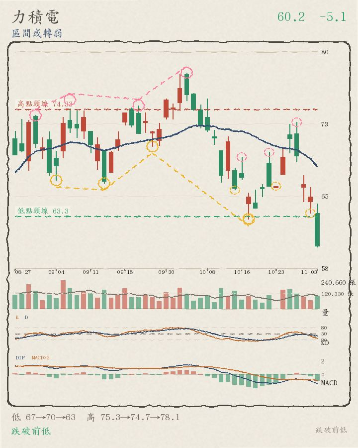
13:31 盤中 60.2（-7.81%），比加權指數弱 3.98 個百分點、跌破月線 69.265，離高點頸線 74.33 還差 19.0%，轉折還沒走出明顯方向。
- 月線位置：現價 60.2 在月線 69.265 之下（-13.1%）；5 日線 68.42 也在月線之下（短均在下）；月線向下
- 量能：以已過交易時間推估，今天成交量約是 20 日均量的 0.98 倍（量平），跟 20 日均量差不多
- 關鍵價位：已跌破前一個轉折低點；高點頸線 74.33 還在現價上方 19.0%；前一交易日高點 66.3（低於 9.2%）；今天盤中高點 64.6（低於 6.8%）；今天盤中低點 60.1（高於 0.2%）
- 轉折結構：低點 66.7、70.5、63 與高點 75.3、74.7、78.1 都沒有明顯遞增，屬於區間震盪或轉弱；還沒確認的轉折低點 10-23 66.4、11-02 63.6；還沒確認的轉折高點 10-22 69.9、10-29 73（圖上虛線小圈）
群聯 8299 上櫃
1695 -180.0（-9.60%）
區間或轉弱 盤中成交值 61.63 億・全榜第 33 名（上櫃第 8 名）・相對大盤 -5.77
好條件 0/7：無
不好條件 7/7：跌破前低、今日下跌、相對大盤弱、在月線之下、貼近今日低點（1% 內）、跌破昨日低點、月線下彎
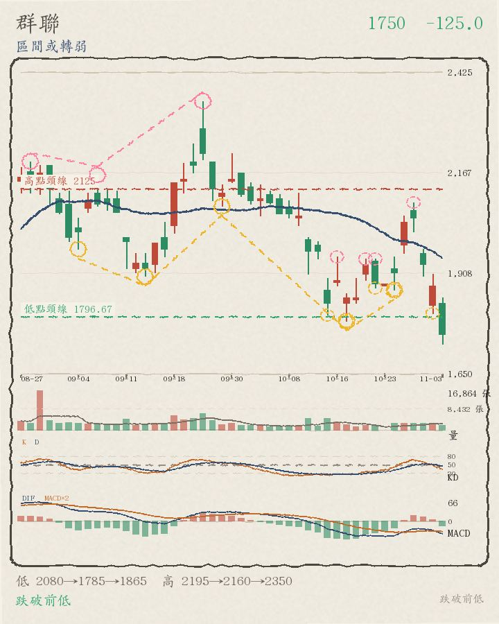
13:31 盤中 1695（-9.60%），比加權指數弱 5.77 個百分點、跌破月線 1964.75，離高點頸線 2125 還差 20.2%，轉折還沒走出明顯方向。
- 月線位置：現價 1695 在月線 1964.75 之下（-13.7%）；5 日線 1961 也在月線之下（短均在下）；月線向下
- 量能：以已過交易時間推估，今天成交量約是 20 日均量的 1.50 倍（爆量），比 20 日均量大不少；下跌卻量增，量價背離
- 關鍵價位：已跌破前一個轉折低點；高點頸線 2125 還在現價上方 20.2%；前一交易日高點 1905（低於 11.0%）；今天盤中高點 1845（低於 8.1%）；今天盤中低點 1690（高於 0.3%）
- 轉折結構：低點 2080、1785、1865 與高點 2195、2160、2350 都沒有明顯遞增，屬於區間震盪或轉弱；還沒確認的轉折低點 10-27 1865、11-02 1805；還沒確認的轉折高點 10-22 1945、10-29 2090（圖上虛線小圈）
友達 2409 上市
28.8 -1.9（-6.34%）
底部墊高、未過前高 盤中成交值 56.87 億・全榜第 34 名（上市第 26 名）・相對大盤 -2.51
好條件 1/7：底底高
不好條件 7/7：跌破前低、今日下跌、相對大盤弱、在月線之下、貼近今日低點（1% 內）、跌破昨日低點、月線下彎
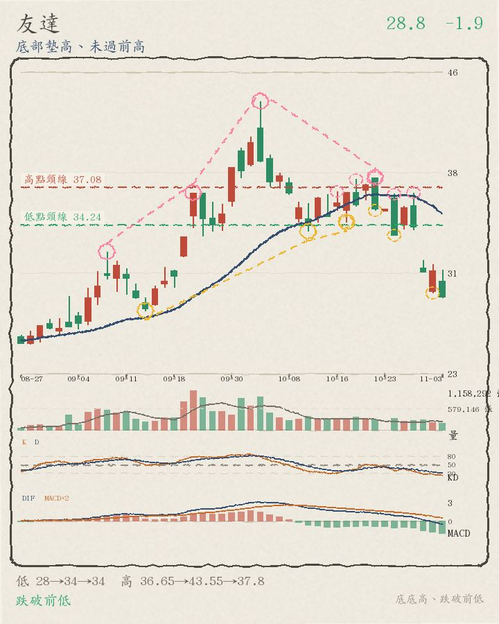
13:31 盤中 28.8（-6.34%），比加權指數弱 2.51 個百分點、跌破月線 35.66，離高點頸線 37.08 還差 22.3%，底部還在墊高（但高點沒同步創高）。
- 月線位置：現價 28.8 在月線 35.66 之下（-19.2%）；5 日線 32.89 也在月線之下（短均在下）；月線向下
- 量能：以已過交易時間推估，今天成交量約是 20 日均量的 0.48 倍（量縮），比 20 日均量少很多
- 關鍵價位：已跌破前一個轉折低點；高點頸線 37.08 還在現價上方 22.3%；前一交易日高點 31.25（低於 7.8%）；今天盤中高點 30.8（低於 6.5%）；今天盤中低點 28.7（高於 0.3%）
- 轉折結構：低點 27.75、33.75、34.45 墊高（底底高），但高點 36.65、43.55、37.8 沒有同步創高；還沒確認的轉折低點 10-27 33.45、11-02 29.1；還沒確認的轉折高點 10-27 36.55、10-29 36.65（圖上虛線小圈）
群創 3481 上市
41.2 -3.4（-7.52%）
區間或轉弱 盤中成交值 53.99 億・全榜第 35 名（上市第 27 名）・相對大盤 -3.69
好條件 0/7：無
不好條件 6/7：跌破前低、今日下跌、相對大盤弱、在月線之下、跌破昨日低點、月線下彎
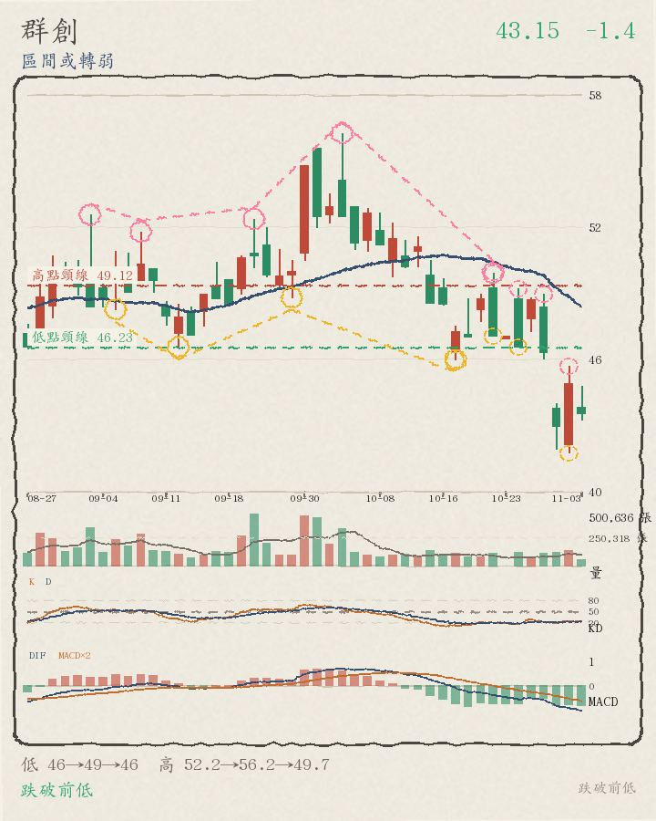
13:31 盤中 41.2（-7.52%），比加權指數弱 3.69 個百分點、跌破月線 48.6，離高點頸線 49.12 還差 16.1%，轉折還沒走出明顯方向。
- 月線位置：現價 41.2 在月線 48.6 之下（-15.2%）；5 日線 45.56 也在月線之下（短均在下）；月線向下
- 量能：以已過交易時間推估，今天成交量約是 20 日均量的 0.91 倍（量平），比 20 日均量少一些
- 關鍵價位：已跌破前一個轉折低點；高點頸線 49.12 還在現價上方 16.1%；前一交易日高點 45.35（低於 9.2%）；今天盤中高點 44.4（低於 7.2%）；今天盤中低點 41.2（高於 0.0%）
- 轉折結構：低點 46.25、48.55、45.65 與高點 52.2、56.2、49.7 都沒有明顯遞增，屬於區間震盪或轉弱；還沒確認的轉折低點 10-27 46.25、11-02 41.3；還沒確認的轉折高點 10-29 48.7、11-02 45.35（圖上虛線小圈）
禾伸堂 3026 上市
574 -63.0（-9.89%）
區間或轉弱 盤中成交值 53.71 億・全榜第 36 名（上市第 28 名）・相對大盤 -6.06
好條件 0/7：無
不好條件 6/7：跌破前低、今日下跌、相對大盤弱、在月線之下、跌破昨日低點、月線下彎

13:31 盤中 574（-9.89%），比加權指數弱 6.06 個百分點、跌破月線 785.25，離高點頸線 780.5 還差 26.5%，轉折還沒走出明顯方向。
- 月線位置：現價 574 在月線 785.25 之下（-26.9%）；5 日線 713.6 也在月線之下（短均在下）；月線向下
- 量能：以已過交易時間推估，今天成交量約是 20 日均量的 0.82 倍（量平），比 20 日均量少很多
- 關鍵價位：已跌破前一個轉折低點；高點頸線 780.5 還在現價上方 26.5%；前一交易日高點 695（低於 17.4%）；今天盤中高點 631（低於 9.0%）；今天盤中低點 574（高於 0.0%）
- 轉折結構：低點 793、726、704 與高點 881、888、859 都沒有明顯遞增，屬於區間震盪或轉弱；還沒確認的轉折低點 10-27 704、11-02 637；還沒確認的轉折高點 10-27 783、10-29 778（圖上虛線小圈）
世芯-KY 3661 上市
3150 -245.0（-7.22%）
區間或轉弱 盤中成交值 53.23 億・全榜第 37 名（上市第 29 名）・相對大盤 -3.39
好條件 0/7：無
不好條件 6/7：跌破前低、今日下跌、相對大盤弱、在月線之下、跌破昨日低點、月線下彎
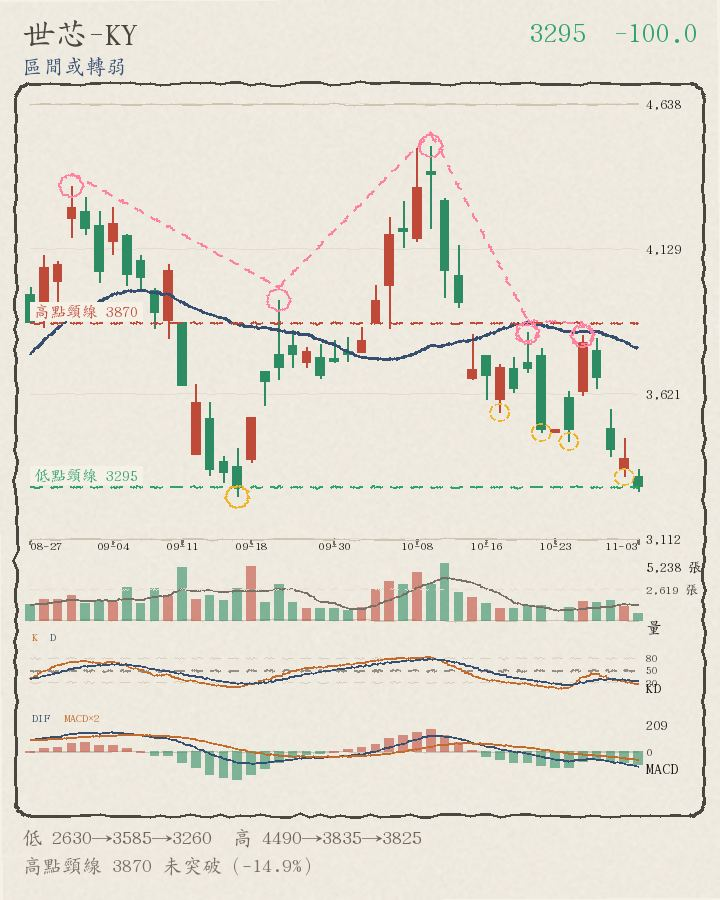
13:31 盤中 3150（-7.22%），比加權指數弱 3.39 個百分點、跌破月線 3805.25，離高點頸線 3870 還差 18.6%，轉折還沒走出明顯方向。
- 月線位置：現價 3150 在月線 3805.25 之下（-17.2%）；5 日線 3559 也在月線之下（短均在下）；月線向下
- 量能：以已過交易時間推估，今天成交量約是 20 日均量的 0.77 倍（量平），比 20 日均量少很多
- 關鍵價位：已跌破前一個轉折低點；高點頸線 3870 還在現價上方 18.6%；前一交易日高點 3465（低於 9.1%）；今天盤中高點 3355（低於 6.1%）；今天盤中低點 3115（高於 1.1%）
- 轉折結構：低點 2630、3585、3260 與高點 4490、3835、3825 都沒有明顯遞增，屬於區間震盪或轉弱；還沒確認的轉折低點 10-27 3455、11-02 3330；還沒確認的轉折高點 10-21 3835、10-28 3825（圖上虛線小圈）
騰輝電子-KY 6672 上市
498 -31.0（-5.86%）
上升趨勢（底底高＋頭頭高） 盤中成交值 49.08 億・全榜第 38 名（上市第 30 名）・相對大盤 -2.03
好條件 3/7：月線向上、底底高、頭頭高
不好條件 5/7：跌破前低、今日下跌、相對大盤弱、在月線之下、貼近今日低點（1% 內）
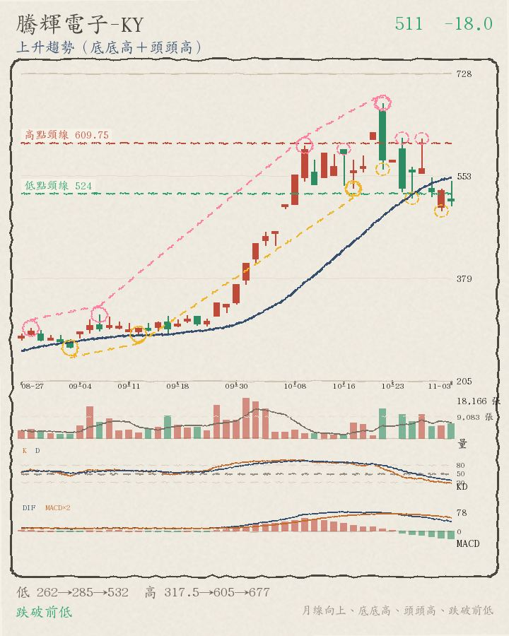
13:31 盤中 498（-5.86%），比加權指數弱 2.03 個百分點、跌破月線 546.825，離高點頸線 609.75 還差 18.3%，轉折結構仍是底底高＋頭頭高。
- 月線位置：現價 498 在月線 546.825 之下（-8.9%）；5 日線 543.2 也在月線之下（短均在下）；月線向上
- 量能：以已過交易時間推估，今天成交量約是 20 日均量的 1.47 倍（量增），比 20 日均量大不少；下跌卻量增，量價背離
- 關鍵價位：已跌破前一個轉折低點；高點頸線 609.75 還在現價上方 18.3%；前一交易日高點 531（低於 6.2%）；今天盤中高點 544（低於 8.5%）；今天盤中低點 493.5（高於 0.9%）
- 轉折結構：低點 261.5、285、532 一路墊高、高點 317.5、605、677 也一路墊高，是底底高＋頭頭高；還沒確認的轉折低點 10-28 516、11-02 494；還沒確認的轉折高點 10-27 618、10-29 617（圖上虛線小圈）
智邦 2345 上市
1490 -125.0（-7.74%）
區間或轉弱 盤中成交值 49.04 億・全榜第 39 名（上市第 31 名）・相對大盤 -3.91
好條件 0/7：無
不好條件 7/7：跌破前低、今日下跌、相對大盤弱、在月線之下、貼近今日低點（1% 內）、跌破昨日低點、月線下彎
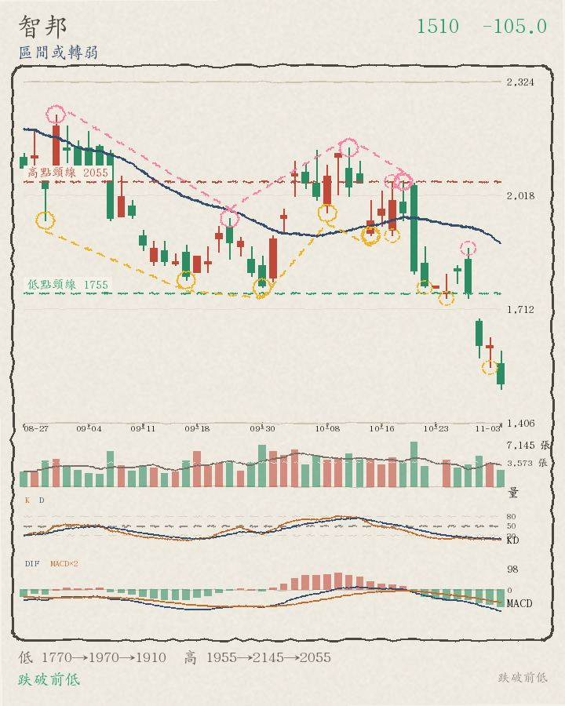
13:31 盤中 1490（-7.74%），比加權指數弱 3.91 個百分點、跌破月線 1911.25，離高點頸線 2055 還差 27.5%，轉折還沒走出明顯方向。
- 月線位置：現價 1490 在月線 1911.25 之下（-22.0%）；5 日線 1712 也在月線之下（短均在下）；月線向下
- 量能：以已過交易時間推估，今天成交量約是 20 日均量的 0.74 倍（量平），比 20 日均量少很多
- 關鍵價位：已跌破前一個轉折低點；高點頸線 2055 還在現價上方 27.5%；前一交易日高點 1635（低於 8.9%）；今天盤中高點 1600（低於 6.9%）；今天盤中低點 1480（高於 0.7%）
- 轉折結構：低點 1770、1970、1910 與高點 1955、2145、2055 都沒有明顯遞增，屬於區間震盪或轉弱；還沒確認的轉折低點 10-27 1740、11-02 1555；還沒確認的轉折高點 10-20 2055、10-29 1875（圖上虛線小圈）
光寶科 2301 上市
227 -16.5（-6.78%）
區間或轉弱 盤中成交值 45.66 億・全榜第 40 名（上市第 32 名）・相對大盤 -2.95
好條件 0/7：無
不好條件 6/7：跌破前低、今日下跌、相對大盤弱、在月線之下、跌破昨日低點、月線下彎
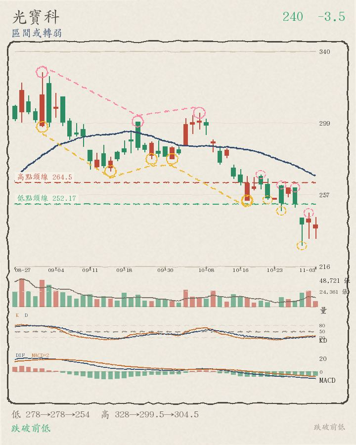
13:31 盤中 227（-6.78%），比加權指數弱 2.95 個百分點、跌破月線 270.3，離高點頸線 264.5 還差 14.2%，轉折還沒走出明顯方向。
- 月線位置：現價 227 在月線 270.3 之下（-16.0%）；5 日線 250 也在月線之下（短均在下）；月線向下
- 量能：以已過交易時間推估，今天成交量約是 20 日均量的 1.36 倍（量增），比 20 日均量大不少；下跌卻量增，量價背離
- 關鍵價位：已跌破前一個轉折低點；高點頸線 264.5 還在現價上方 14.2%；前一交易日高點 247（低於 8.1%）；今天盤中高點 245.5（低於 7.5%）；今天盤中低點 227（高於 0.0%）
- 轉折結構：低點 278、278、254 與高點 328、299.5、304.5 都沒有明顯遞增，屬於區間震盪或轉弱；還沒確認的轉折低點 10-27 248、10-30 228；還沒確認的轉折高點 10-29 261.5、11-02 247（圖上虛線小圈）
旺宏 2337 上市
88.3 -7.9（-8.21%）
區間或轉弱 盤中成交值 45.65 億・全榜第 41 名（上市第 33 名）・相對大盤 -4.38
好條件 0/7：無
不好條件 7/7：跌破前低、今日下跌、相對大盤弱、在月線之下、貼近今日低點（1% 內）、跌破昨日低點、月線下彎
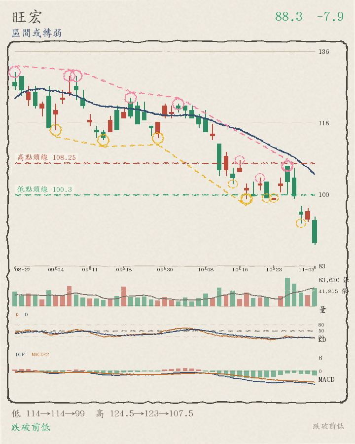
13:31 盤中 88.3（-8.21%），比加權指數弱 4.38 個百分點、跌破月線 107.13，離高點頸線 108.25 還差 18.4%，轉折還沒走出明顯方向。
- 月線位置：現價 88.3 在月線 107.13 之下（-17.6%）；5 日線 99.62 也在月線之下（短均在下）；月線向下
- 量能：以已過交易時間推估，今天成交量約是 20 日均量的 1.57 倍（爆量），比 20 日均量大不少；下跌卻量增，量價背離
- 關鍵價位：已跌破前一個轉折低點；高點頸線 108.25 還在現價上方 18.4%；前一交易日高點 96.9（低於 8.9%）；今天盤中高點 94.8（低於 6.9%）；今天盤中低點 87.7（高於 0.7%）
- 轉折結構：低點 114、114.5、99.2 與高點 124.5、123、107.5 都沒有明顯遞增，屬於區間震盪或轉弱；還沒確認的轉折低點 10-23 99.5、10-30 93.2；還沒確認的轉折高點 10-21 104.5、10-28 107.5（圖上虛線小圈）
川湖 2059 上市
9220 -200.0（-2.12%）
區間或轉弱 盤中成交值 45.09 億・全榜第 42 名（上市第 34 名）・相對大盤 +1.71
好條件 0/7：無
不好條件 5/7：跌破前低、今日下跌、在月線之下、跌破昨日低點、月線下彎
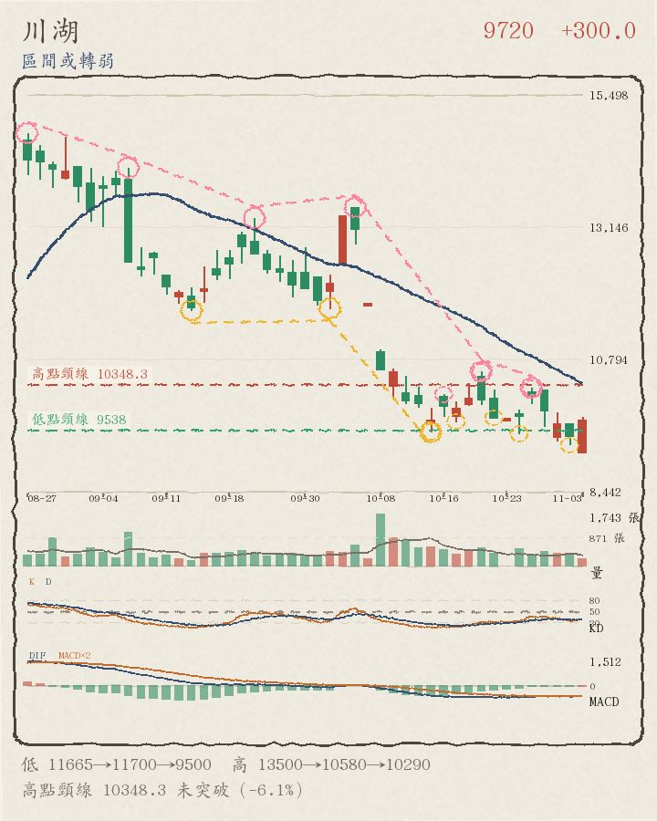
13:31 盤中 9220（-2.12%），比加權指數強 1.71 個百分點、跌破月線 10492.2，離高點頸線 10348.3 還差 10.9%，轉折還沒走出明顯方向。
- 月線位置：現價 9220 在月線 10492.2 之下（-12.1%）；5 日線 9782 也在月線之下（短均在下）；月線向下
- 量能：以已過交易時間推估，今天成交量約是 20 日均量的 0.84 倍（量平），比 20 日均量少很多
- 關鍵價位：已跌破前一個轉折低點；高點頸線 10348.3 還在現價上方 10.9%；前一交易日高點 9655（低於 4.5%）；今天盤中高點 9850（低於 6.4%）；今天盤中低點 9125（高於 1.0%）
- 轉折結構：低點 11665、11700、9500 與高點 13500、10580、10290 都沒有明顯遞增，屬於區間震盪或轉弱；還沒確認的轉折低點 10-27 9475、11-02 9270；還沒確認的轉折高點 10-21 10580、10-28 10290（圖上虛線小圈）
致茂 2360 上市
1545 -170.0（-9.91%）
區間或轉弱 盤中成交值 44.17 億・全榜第 43 名（上市第 35 名）・相對大盤 -6.08
好條件 0/7：無
不好條件 6/7：跌破前低、今日下跌、相對大盤弱、在月線之下、跌破昨日低點、月線下彎
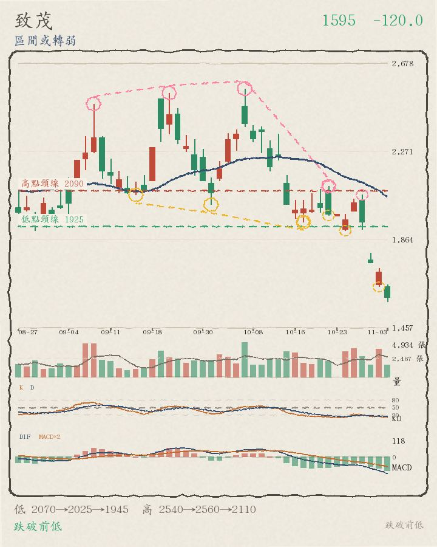
13:31 盤中 1545（-9.91%），比加權指數弱 6.08 個百分點、跌破月線 2090.75，離高點頸線 2090 還差 26.1%，轉折還沒走出明顯方向。
- 月線位置：現價 1545 在月線 2090.75 之下（-26.1%）；5 日線 1881 也在月線之下（短均在下）；月線向下
- 量能：以已過交易時間推估，今天成交量約是 20 日均量的 1.06 倍（量平），比 20 日均量大一些
- 關鍵價位：已跌破前一個轉折低點；高點頸線 2090 還在現價上方 26.1%；前一交易日高點 1730（低於 10.7%）；今天盤中高點 1655（低於 6.6%）；今天盤中低點 1545（高於 0.0%）
- 轉折結構：低點 2070、2025、1945 與高點 2540、2560、2110 都沒有明顯遞增，屬於區間震盪或轉弱；還沒確認的轉折低點 10-27 1905、11-02 1645；還沒確認的轉折高點 10-22 2110、10-29 2070（圖上虛線小圈）
高力 8996 上市
1360 -150.0（-9.93%）
區間或轉弱 盤中成交值 44.09 億・全榜第 44 名（上市第 36 名）・相對大盤 -6.10
好條件 0/7：無
不好條件 6/7：跌破前低、今日下跌、相對大盤弱、在月線之下、跌破昨日低點、月線下彎
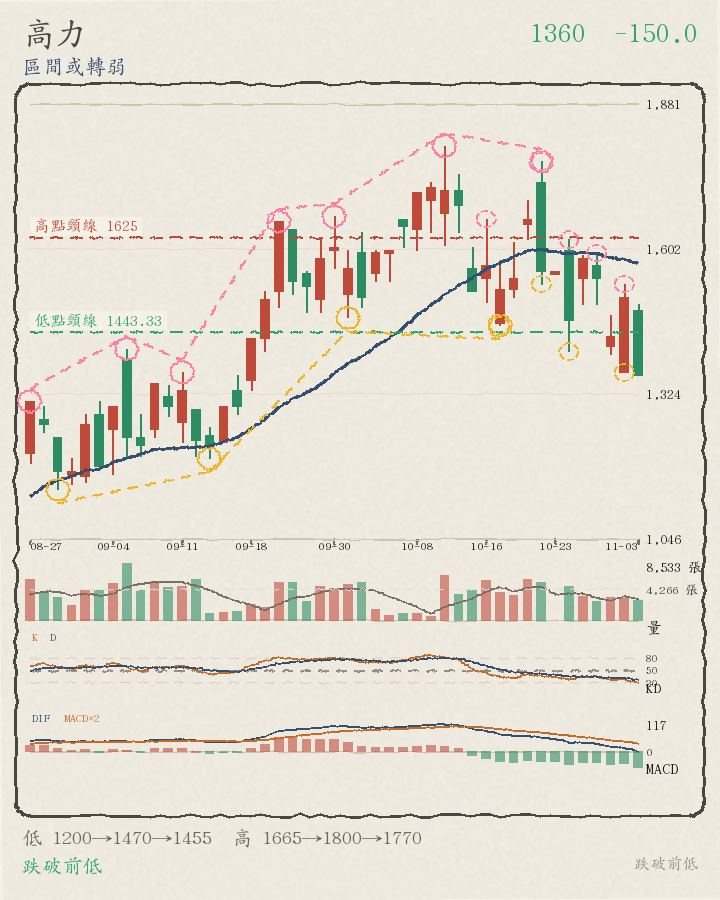
13:31 盤中 1360（-9.93%），比加權指數弱 6.10 個百分點、跌破月線 1583，離高點頸線 1625 還差 16.3%，轉折還沒走出明顯方向。
- 月線位置：現價 1360 在月線 1583 之下（-14.1%）；5 日線 1508 也在月線之下（短均在下）；月線向下
- 量能：以已過交易時間推估，今天成交量約是 20 日均量的 0.87 倍（量平），比 20 日均量少一些
- 關鍵價位：已跌破前一個轉折低點；高點頸線 1625 還在現價上方 16.3%；前一交易日高點 1535（低於 11.4%）；今天盤中高點 1495（低於 9.0%）；今天盤中低點 1360（高於 0.0%）
- 轉折結構：低點 1200、1470、1455 與高點 1665、1800、1770 都沒有明顯遞增，屬於區間震盪或轉弱；還沒確認的轉折低點 10-27 1405、11-02 1365；還沒確認的轉折高點 10-29 1595、11-02 1535（圖上虛線小圈）
緯穎 6669 上市
1770 -50.0（-2.75%）
區間或轉弱 盤中成交值 43.12 億・全榜第 45 名（上市第 37 名）・相對大盤 +1.08
好條件 0/7：無
不好條件 5/7：跌破前低、今日下跌、在月線之下、貼近今日低點（1% 內）、月線下彎
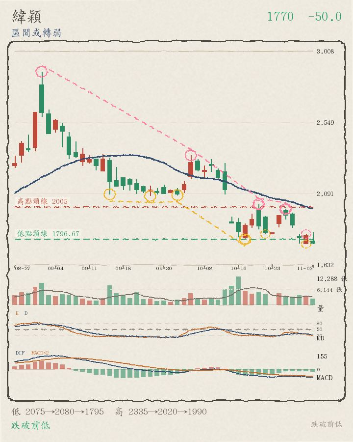
13:31 盤中 1770（-2.75%），比加權指數強 1.08 個百分點、跌破月線 2006.25，離高點頸線 2005 還差 11.7%，轉折還沒走出明顯方向。
- 月線位置：現價 1770 在月線 2006.25 之下（-11.8%）；5 日線 1883 也在月線之下（短均在下）；月線向下
- 量能：以已過交易時間推估，今天成交量約是 20 日均量的 0.56 倍（量縮），比 20 日均量少很多
- 關鍵價位：已跌破前一個轉折低點；高點頸線 2005 還在現價上方 11.7%；前一交易日高點 1830（低於 3.3%）；今天盤中高點 1840（低於 3.8%）；今天盤中低點 1765（高於 0.3%）
- 轉折結構：低點 2075、2080、1795 與高點 2335、2020、1990 都沒有明顯遞增，屬於區間震盪或轉弱；還沒確認的轉折低點 10-22 1830、11-02 1765；還沒確認的轉折高點 10-28 1990、11-02 1830（圖上虛線小圈）
信驊 5274 上櫃
14620 -1005.0（-6.43%）
區間或轉弱 盤中成交值 42.69 億・全榜第 46 名（上櫃第 9 名）・相對大盤 -2.60
好條件 0/7：無
不好條件 7/7：跌破前低、今日下跌、相對大盤弱、在月線之下、貼近今日低點（1% 內）、跌破昨日低點、月線下彎
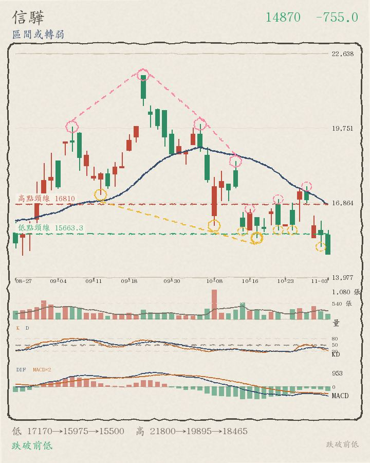
13:31 盤中 14620（-6.43%），比加權指數弱 2.60 個百分點、跌破月線 16992.5，離高點頸線 16810 還差 13.0%，轉折還沒走出明顯方向。
- 月線位置：現價 14620 在月線 16992.5 之下（-14.0%）；5 日線 16377 也在月線之下（短均在下）；月線向下
- 量能：以已過交易時間推估，今天成交量約是 20 日均量的 0.92 倍（量平），比 20 日均量少一些
- 關鍵價位：已跌破前一個轉折低點；高點頸線 16810 還在現價上方 13.0%；前一交易日高點 16165（低於 9.6%）；今天盤中高點 15800（低於 7.5%）；今天盤中低點 14600（高於 0.1%）
- 轉折結構：低點 17170、15975、15500 與高點 21800、19895、18465 都沒有明顯遞增，屬於區間震盪或轉弱；還沒確認的轉折低點 10-27 15800、11-02 15155；還沒確認的轉折高點 10-22 17000、10-29 17490（圖上虛線小圈）
貿聯-KY 3665 上市
1570 -55.0（-3.38%）
區間或轉弱 盤中成交值 42.53 億・全榜第 47 名（上市第 38 名）・相對大盤 +0.45
好條件 0/7：無
不好條件 5/7：跌破前低、今日下跌、在月線之下、貼近今日低點（1% 內）、月線下彎
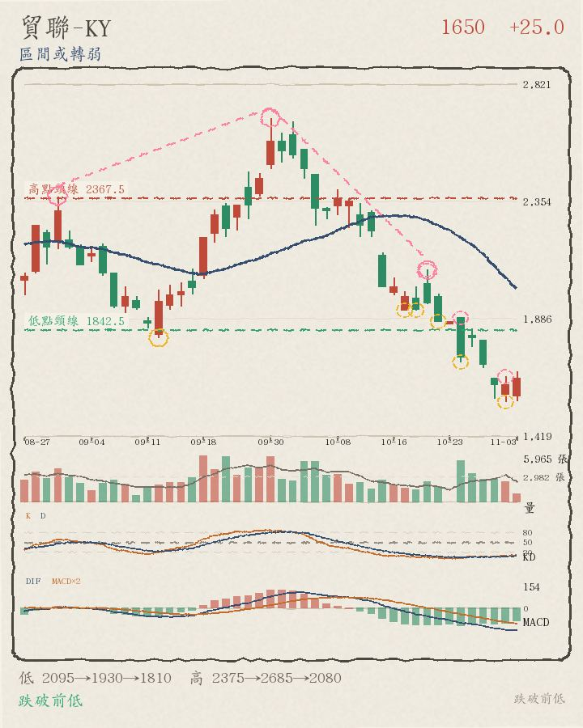
13:31 盤中 1570（-3.38%），比加權指數強 0.45 個百分點、跌破月線 2050.25，離高點頸線 2367.5 還差 33.7%，轉折還沒走出明顯方向。
- 月線位置：現價 1570 在月線 2050.25 之下（-23.4%）；5 日線 1700 也在月線之下（短均在下）；月線向下
- 量能：以已過交易時間推估，今天成交量約是 20 日均量的 0.91 倍（量平），比 20 日均量少一些
- 關鍵價位：已跌破前一個轉折低點；高點頸線 2367.5 還在現價上方 33.7%；前一交易日高點 1655（低於 5.1%）；今天盤中高點 1675（低於 6.3%）；今天盤中低點 1555（高於 1.0%）
- 轉折結構：低點 2095、1930、1810 與高點 2375、2685、2080 都沒有明顯遞增，屬於區間震盪或轉弱；還沒確認的轉折低點 10-27 1715、11-02 1555；還沒確認的轉折高點 10-27 1890、11-02 1655（圖上虛線小圈）
矽力*-KY 6415 上市
472.5 -28.5（-5.69%）
上升趨勢（底底高＋頭頭高） 盤中成交值 42.13 億・全榜第 48 名（上市第 39 名）・相對大盤 -1.86
好條件 4/7：站上月線、月線向上、底底高、頭頭高
不好條件 4/7：今日下跌、相對大盤弱、貼近今日低點（1% 內）、跌破昨日低點
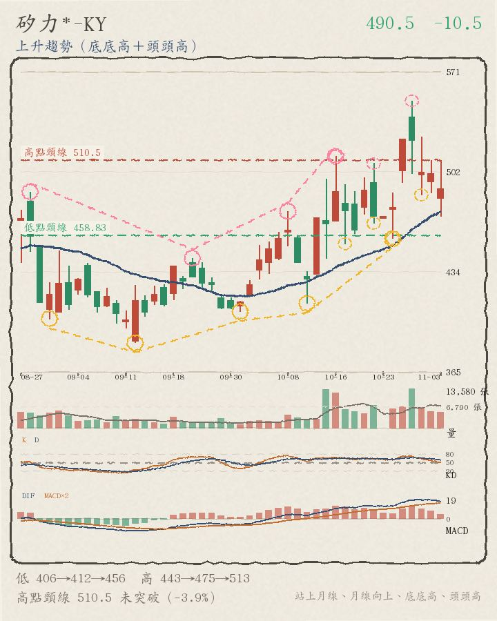
13:31 盤中 472.5（-5.69%），比加權指數弱 1.86 個百分點、站上月線 471.625，離高點頸線 510.5 還差 7.4%，轉折結構仍是底底高＋頭頭高。
- 月線位置：現價 472.5 在月線 471.625 之上（+0.2%）；5 日線 506 也在月線之上（短均在上）；月線向上
- 量能：以已過交易時間推估，今天成交量約是 20 日均量的 1.56 倍（爆量），比 20 日均量大不少；下跌卻量增，量價背離
- 關鍵價位：高點頸線 510.5 還沒突破，差 7.4%；前一交易日高點 510（低於 7.4%）；今天盤中高點 510（低於 7.4%）；今天盤中低點 472（高於 0.1%）
- 轉折結構：低點 406.5、412、456.5 一路墊高、高點 443、475、513 也一路墊高，是底底高＋頭頭高；還沒確認的轉折低點 10-27 456.5、10-30 486.5；還沒確認的轉折高點 10-22 508、10-29 551（圖上虛線小圈）
鴻勁 7769 上市
4460 -455.0（-9.26%）
區間或轉弱 盤中成交值 40.59 億・全榜第 49 名（上市第 40 名）・相對大盤 -5.43
好條件 0/7：無
不好條件 7/7：跌破前低、今日下跌、相對大盤弱、在月線之下、貼近今日低點（1% 內）、跌破昨日低點、月線下彎
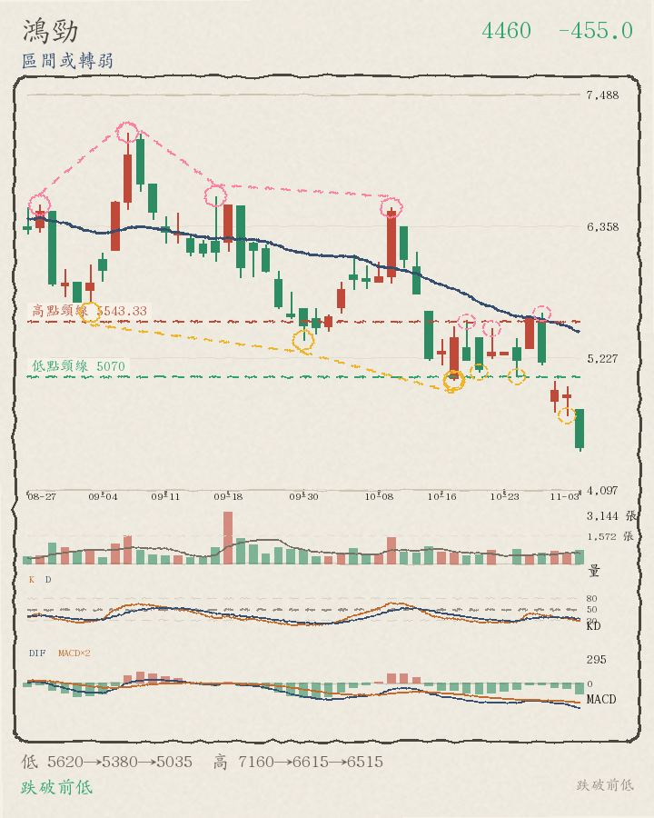
13:31 盤中 4460（-9.26%），比加權指數弱 5.43 個百分點、跌破月線 5503.75，離高點頸線 5543.33 還差 19.5%，轉折還沒走出明顯方向。
- 月線位置：現價 4460 在月線 5503.75 之下（-19.0%）；5 日線 5166 也在月線之下（短均在下）；月線向下
- 量能：以已過交易時間推估，今天成交量約是 20 日均量的 1.31 倍（量增），比 20 日均量大不少；下跌卻量增，量價背離
- 關鍵價位：已跌破前一個轉折低點；高點頸線 5543.33 還在現價上方 19.5%；前一交易日高點 4985（低於 10.5%）；今天盤中高點 4790（低於 6.9%）；今天盤中低點 4425（高於 0.8%）
- 轉折結構：低點 5620、5380、5035 與高點 7160、6615、6515 都沒有明顯遞增，屬於區間震盪或轉弱；還沒確認的轉折低點 10-27 5070、11-02 4735；還沒確認的轉折高點 10-22 5480、10-29 5610（圖上虛線小圈）
富世達 6805 上市
2150 -200.0（-8.51%）
區間或轉弱 盤中成交值 40.23 億・全榜第 50 名（上市第 41 名）・相對大盤 -4.68
好條件 0/7：無
不好條件 6/7：跌破前低、今日下跌、相對大盤弱、在月線之下、跌破昨日低點、月線下彎
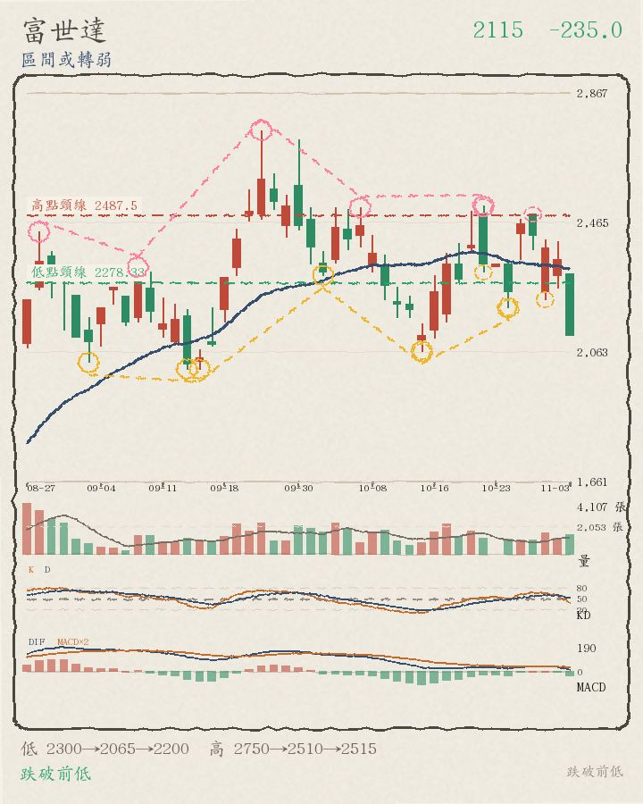
13:31 盤中 2150（-8.51%），比加權指數弱 4.68 個百分點、跌破月線 2330，離高點頸線 2487.5 還差 13.6%，轉折還沒走出明顯方向。
- 月線位置：現價 2150 在月線 2330 之下（-7.7%）；5 日線 2374 也在月線之上（短均在上）；月線向下
- 量能：以已過交易時間推估，今天成交量約是 20 日均量的 1.22 倍（量增），比 20 日均量大不少；下跌卻量增，量價背離
- 關鍵價位：已跌破前一個轉折低點；高點頸線 2487.5 還在現價上方 13.6%；前一交易日高點 2405（低於 10.6%）；今天盤中高點 2305（低於 6.7%）；今天盤中低點 2115（高於 1.7%）
- 轉折結構：低點 2300、2065、2200 與高點 2750、2510、2515 都沒有明顯遞增，屬於區間震盪或轉弱；還沒確認的轉折低點 10-27 2200、10-30 2225；還沒確認的轉折高點 10-22 2515、10-29 2490（圖上虛線小圈）
旺矽 6223 上櫃
4190 -465.0（-9.99%）
區間或轉弱 盤中成交值 40.01 億・全榜第 51 名（上櫃第 10 名）・相對大盤 -6.16
好條件 0/7：無
不好條件 6/7：跌破前低、今日下跌、相對大盤弱、在月線之下、跌破昨日低點、月線下彎
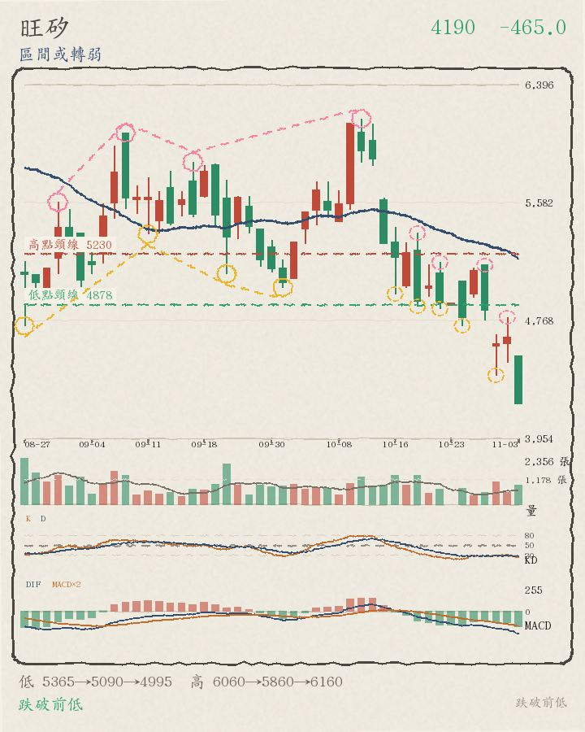
13:31 盤中 4190（-9.99%），比加權指數弱 6.16 個百分點、跌破月線 5249.75，離高點頸線 5230 還差 19.9%，轉折還沒走出明顯方向。
- 月線位置：現價 4190 在月線 5249.75 之下（-20.2%）；5 日線 4802 也在月線之下（短均在下）；月線向下
- 量能：以已過交易時間推估，今天成交量約是 20 日均量的 1.05 倍（量平），比 20 日均量大一些
- 關鍵價位：已跌破前一個轉折低點；高點頸線 5230 還在現價上方 19.9%；前一交易日高點 4790（低於 12.5%）；今天盤中高點 4525（低於 7.4%）；今天盤中低點 4190（高於 0.0%）
- 轉折結構：低點 5365、5090、4995 與高點 6060、5860、6160 都沒有明顯遞增，屬於區間震盪或轉弱；還沒確認的轉折低點 10-27 4730、10-30 4390；還沒確認的轉折高點 10-29 5150、11-02 4790（圖上虛線小圈）
華通 2313 上市
186 -19.0（-9.27%）
上升趨勢（底底高＋頭頭高） 盤中成交值 38.8 億・全榜第 52 名（上市第 42 名）・相對大盤 -5.44
好條件 2/7：底底高、頭頭高
不好條件 6/7：跌破前低、今日下跌、相對大盤弱、在月線之下、跌破昨日低點、月線下彎
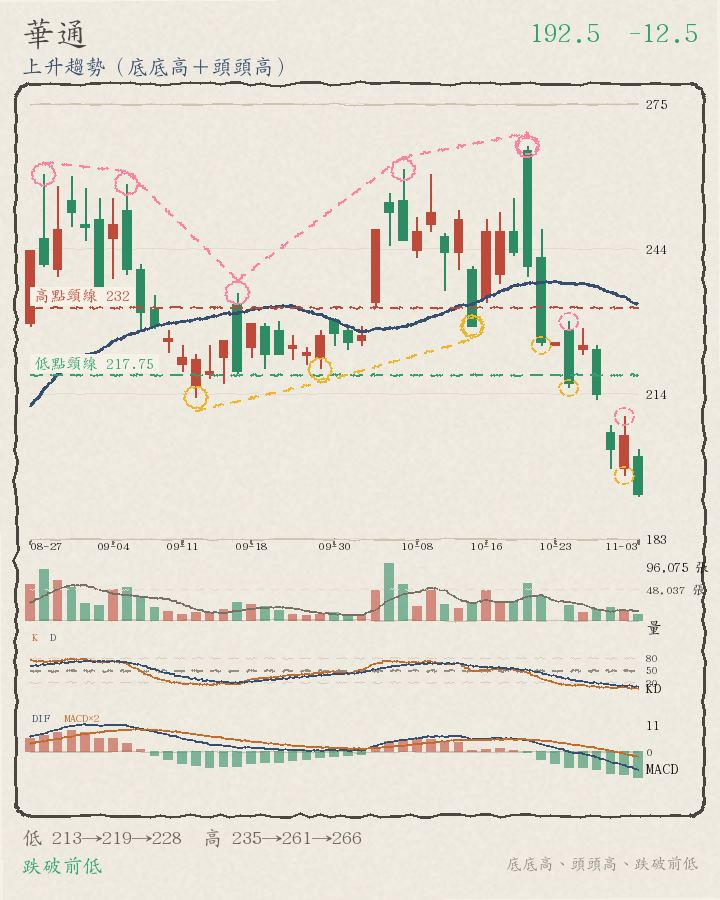
13:31 盤中 186（-9.27%），比加權指數弱 5.44 個百分點、跌破月線 234.2，離高點頸線 232 還差 19.8%，轉折結構仍是底底高＋頭頭高。
- 月線位置：現價 186 在月線 234.2 之下（-20.6%）；5 日線 212.1 也在月線之下（短均在下）；月線向下
- 量能：以已過交易時間推估，今天成交量約是 20 日均量的 0.61 倍（量縮），比 20 日均量少很多
- 關鍵價位：已跌破前一個轉折低點；高點頸線 232 還在現價上方 19.8%；前一交易日高點 209（低於 11.0%）；今天盤中高點 202（低於 7.9%）；今天盤中低點 186（高於 0.0%）
- 轉折結構：低點 213、219、228 一路墊高、高點 235、261、266 也一路墊高，是底底高＋頭頭高；還沒確認的轉折低點 10-27 215、11-02 196.5；還沒確認的轉折高點 10-27 229、11-02 209（圖上虛線小圈）
大量 3167 上市
821 -91.0（-9.98%）
區間或轉弱 盤中成交值 38.77 億・全榜第 53 名（上市第 43 名）・相對大盤 -6.15
好條件 1/7：月線向上
不好條件 5/7：跌破前低、今日下跌、相對大盤弱、在月線之下、跌破昨日低點
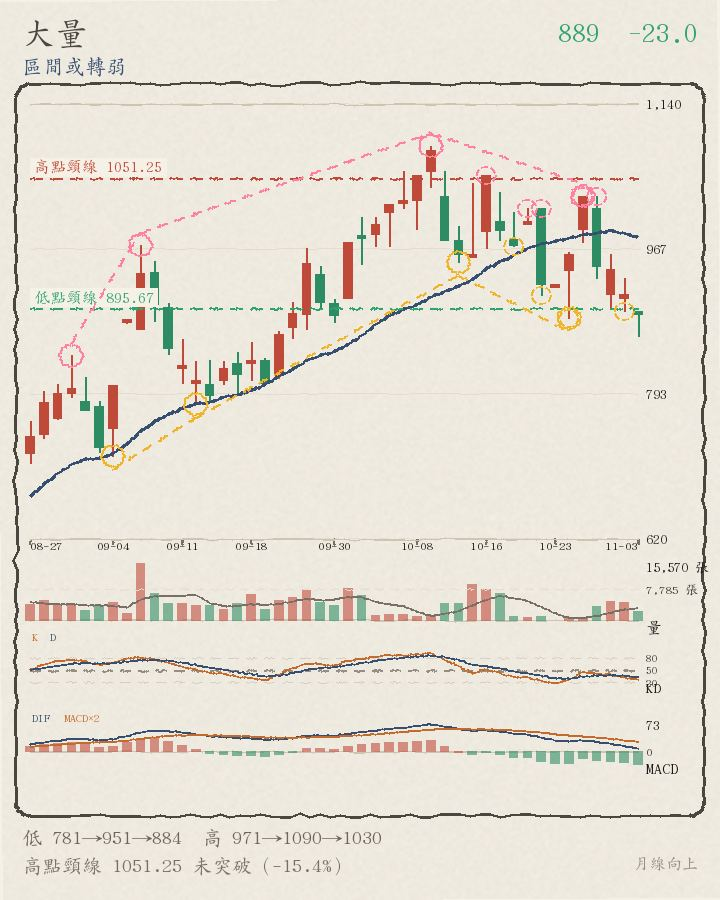
13:31 盤中 821（-9.98%），比加權指數弱 6.15 個百分點、跌破月線 985.6，離高點頸線 1051.25 還差 21.9%，轉折還沒走出明顯方向。
- 月線位置：現價 821 在月線 985.6 之下（-16.7%）；5 日線 958 也在月線之下（短均在下）；月線向上
- 量能：以已過交易時間推估，今天成交量約是 20 日均量的 1.31 倍（量增），比 20 日均量大不少；下跌卻量增，量價背離
- 關鍵價位：已跌破前一個轉折低點；高點頸線 1051.25 還在現價上方 21.9%；前一交易日高點 932（低於 11.9%）；今天盤中高點 892（低於 8.0%）；今天盤中低點 821（高於 0.0%）
- 轉折結構：低點 781、951、884 與高點 971、1090、1030 都沒有明顯遞增，屬於區間震盪或轉弱；還沒確認的轉折低點 10-27 884、11-02 892；還沒確認的轉折高點 10-28 1030、10-29 1030（圖上虛線小圈）
麗臺 2465 上市
114 +2.0（+1.79%）
高點墊高、底部不穩 盤中成交值 37.35 億・全榜第 54 名（上市第 44 名）・相對大盤 +5.62
好條件 5/7：站上月線、月線向上、頭頭高、突破頸線、攻擊量（量增＋上漲）
不好條件 0/7：無
13:31 盤中 114（+1.79%），比加權指數強 5.62 個百分點、站上月線 92.35，已突破高點頸線 112.5，高點還在墊高（但底部沒同步墊高）。
- 月線位置：現價 114 在月線 92.35 之上（+23.4%）；5 日線 104.78 也在月線之上（短均在上）；月線向上
- 量能：以已過交易時間推估，今天成交量約是 20 日均量的 8.62 倍（爆量），比 20 日均量大不少；上漲又量增，量價配合
- 關鍵價位：高點頸線 112.5 已站上；前一交易日高點 112（高於 1.8%）；今天盤中高點 119（低於 4.2%）；今天盤中低點 106（高於 7.5%）
- 轉折結構：高點 107.5、94、94.2 墊高（頭頭高），但低點 87.8、82.2、82.6 沒有同步墊高；還沒確認的轉折低點 10-27 91.8、10-30 102；還沒確認的轉折高點 10-29 113、11-02 112（圖上虛線小圈）
緯創 3231 上市
177 -4.5（-2.48%）
高點墊高、底部不穩 盤中成交值 36.64 億・全榜第 55 名（上市第 45 名）・相對大盤 +1.35
好條件 2/7：月線向上、頭頭高
不好條件 4/7：今日下跌、在月線之下、貼近今日低點（1% 內）、跌破昨日低點
13:31 盤中 177（-2.48%），比加權指數強 1.35 個百分點、跌破月線 187.175，離高點頸線 187.75 還差 5.7%，高點還在墊高（但底部沒同步墊高）。
- 月線位置：現價 177 在月線 187.175 之下（-5.4%）；5 日線 187.7 也在月線之上（短均在上）；月線向上
- 量能：以已過交易時間推估，今天成交量約是 20 日均量的 0.51 倍（量縮），比 20 日均量少很多
- 關鍵價位：高點頸線 187.75 還沒突破，差 5.7%；前一交易日高點 185（低於 4.3%）；今天盤中高點 182（低於 2.7%）；今天盤中低點 176.5（高於 0.3%）
- 轉折結構：高點 190.5、194.5、199.5 墊高（頭頭高），但低點 178、182.5、173.5 沒有同步墊高；還沒確認的轉折低點 10-30 179.5、11-02 179.5；還沒確認的轉折高點 10-28 196、11-02 185（圖上虛線小圈）
頎邦 6147 上櫃
172.5 -19.0（-9.92%）
區間或轉弱 盤中成交值 35.3 億・全榜第 56 名（上櫃第 11 名）・相對大盤 -6.09
好條件 0/7：無
不好條件 6/7：跌破前低、今日下跌、相對大盤弱、在月線之下、跌破昨日低點、月線下彎
13:31 盤中 172.5（-9.92%），比加權指數弱 6.09 個百分點、跌破月線 213.35，離高點頸線 220 還差 21.6%，轉折還沒走出明顯方向。
- 月線位置：現價 172.5 在月線 213.35 之下（-19.1%）；5 日線 204 也在月線之下（短均在下）；月線向下
- 量能：以已過交易時間推估，今天成交量約是 20 日均量的 0.64 倍（量縮），比 20 日均量少很多
- 關鍵價位：已跌破前一個轉折低點；高點頸線 220 還在現價上方 21.6%；前一交易日高點 197.5（低於 12.7%）；今天盤中高點 187.5（低於 8.0%）；今天盤中低點 172.5（高於 0.0%）
- 轉折結構：低點 208、211、194.5 與高點 238、217、223 都沒有明顯遞增，屬於區間震盪或轉弱；還沒確認的轉折低點 10-27 199.5、11-02 187.5；還沒確認的轉折高點 10-21 217、10-28 223（圖上虛線小圈）
晶豪科 3006 上市
240 -21.0（-8.05%）
高點墊高、底部不穩 盤中成交值 35.11 億・全榜第 57 名（上市第 46 名）・相對大盤 -4.22
好條件 1/7：頭頭高
不好條件 5/7：今日下跌、相對大盤弱、在月線之下、跌破昨日低點、月線下彎
13:31 盤中 240（-8.05%），比加權指數弱 4.22 個百分點、跌破月線 256.625，離高點頸線 292 還差 17.8%，高點還在墊高（但底部沒同步墊高）。
- 月線位置：現價 240 在月線 256.625 之下（-6.5%）；5 日線 269.3 也在月線之上（短均在上）；月線向下
- 量能：以已過交易時間推估，今天成交量約是 20 日均量的 1.49 倍（量增），比 20 日均量大不少；下跌卻量增，量價背離
- 關鍵價位：高點頸線 292 還沒突破，差 17.8%；前一交易日高點 268.5（低於 10.6%）；今天盤中高點 264.5（低於 9.3%）；今天盤中低點 240（高於 0.0%）
- 轉折結構：高點 296.5、290、290 墊高（頭頭高），但低點 263、265.5、226.5 沒有同步墊高；還沒確認的轉折低點 10-22 233、11-02 257；還沒確認的轉折高點 10-21 246.5、10-29 291.5（圖上虛線小圈）
華經 2468 上市
55.4 -3.1（-5.30%）
高點墊高、底部不穩 盤中成交值 32.67 億・全榜第 58 名（上市第 47 名）・相對大盤 -1.47
好條件 3/7：站上月線、月線向上、頭頭高
不好條件 3/7：今日下跌、相對大盤弱、貼近今日低點（1% 內）
13:31 盤中 55.4（-5.30%），比加權指數弱 1.47 個百分點、站上月線 48.87，離高點頸線 58.4 還差 5.1%，高點還在墊高（但底部沒同步墊高）。
- 月線位置：現價 55.4 在月線 48.87 之上（+13.4%）；5 日線 54.58 也在月線之上（短均在上）；月線向上
- 量能：以已過交易時間推估，今天成交量約是 20 日均量的 5.04 倍（爆量），比 20 日均量大不少；下跌卻量增，量價背離
- 關鍵價位：高點頸線 58.4 還沒突破，差 5.1%；前一交易日高點 58.5（低於 5.3%）；今天盤中高點 64（低於 13.4%）；今天盤中低點 54.9（高於 0.9%）
- 轉折結構：高點 35、34.2、49.45 墊高（頭頭高），但低點 33.2、32.15、40.5 沒有同步墊高；還沒確認的轉折低點 10-27 51.1、10-30 49.6；還沒確認的轉折高點 10-28 58.3、11-02 58.5（圖上虛線小圈）
富邦金 2881 上市
154.5 -5.0（-3.13%）
區間或轉弱 盤中成交值 32.08 億・全榜第 59 名（上市第 48 名）・相對大盤 +0.70
好條件 1/7：月線向上
不好條件 4/7：今日下跌、在月線之下、貼近今日低點（1% 內）、跌破昨日低點
13:31 盤中 154.5（-3.13%），比加權指數強 0.70 個百分點、跌破月線 157.95，離高點頸線 161.5 還差 4.3%，轉折還沒走出明顯方向。
- 月線位置：現價 154.5 在月線 157.95 之下（-2.2%）；5 日線 161.2 也在月線之上（短均在上）；月線向上
- 量能：以已過交易時間推估，今天成交量約是 20 日均量的 1.27 倍（量增），比 20 日均量大不少；下跌卻量增，量價背離
- 關鍵價位：高點頸線 161.5 還沒突破，差 4.3%；前一交易日高點 163（低於 5.2%）；今天盤中高點 160.5（低於 3.7%）；今天盤中低點 153.5（高於 0.7%）
- 轉折結構：低點 148、147.5、153.5 與高點 164.5、164、164 都沒有明顯遞增，屬於區間震盪或轉弱；還沒確認的轉折低點 10-27 158.5、10-30 158；還沒確認的轉折高點 10-28 164、11-02 163（圖上虛線小圈）
力旺 3529 上櫃
2160 -235.0（-9.81%）
高點墊高、底部不穩 盤中成交值 32.08 億・全榜第 60 名（上櫃第 12 名）・相對大盤 -5.98
好條件 1/7：頭頭高
不好條件 6/7：跌破前低、今日下跌、相對大盤弱、在月線之下、跌破昨日低點、月線下彎
13:31 盤中 2160（-9.81%），比加權指數弱 5.98 個百分點、跌破月線 2740.75，離高點頸線 2740 還差 21.2%，高點還在墊高（但底部沒同步墊高）。
- 月線位置：現價 2160 在月線 2740.75 之下（-21.2%）；5 日線 2519 也在月線之下（短均在下）；月線向下
- 量能：以已過交易時間推估，今天成交量約是 20 日均量的 1.76 倍（爆量），比 20 日均量大不少；下跌卻量增，量價背離
- 關鍵價位：已跌破前一個轉折低點；高點頸線 2740 還在現價上方 21.2%；前一交易日高點 2450（低於 11.8%）；今天盤中高點 2375（低於 9.1%）；今天盤中低點 2160（高於 0.0%）
- 轉折結構：高點 2720、2875、3635 墊高（頭頭高），但低點 2090、2530、2470 沒有同步墊高；還沒確認的轉折低點 10-27 2470、11-02 2345；還沒確認的轉折高點 10-20 2770、10-29 2675（圖上虛線小圈）
京元電子 2449 上市
250 -13.0（-4.94%）
區間或轉弱 盤中成交值 32.02 億・全榜第 61 名（上市第 49 名）・相對大盤 -1.11
好條件 0/7：無
不好條件 6/7：跌破前低、今日下跌、相對大盤弱、在月線之下、貼近今日低點（1% 內）、月線下彎
13:31 盤中 250（-4.94%），比加權指數弱 1.11 個百分點、跌破月線 279.925，離高點頸線 282.67 還差 11.6%，轉折還沒走出明顯方向。
- 月線位置：現價 250 在月線 279.925 之下（-10.7%）；5 日線 266.5 也在月線之下（短均在下）；月線向下
- 量能：以已過交易時間推估，今天成交量約是 20 日均量的 0.50 倍（量縮），比 20 日均量少很多
- 關鍵價位：已跌破前一個轉折低點；高點頸線 282.67 還在現價上方 11.6%；前一交易日高點 263（低於 4.9%）；今天盤中高點 260（低於 3.8%）；今天盤中低點 248（高於 0.8%）
- 轉折結構：低點 253、284、255 與高點 330、310、284.5 都沒有明顯遞增，屬於區間震盪或轉弱；還沒確認的轉折低點 10-22 262、11-02 245.5；還沒確認的轉折高點 10-28 280、11-02 263（圖上虛線小圈）
建榮 5340 上櫃
88.1 -0.1（-0.11%）
高點墊高、底部不穩 盤中成交值 31.64 億・全榜第 62 名（上櫃第 13 名）・相對大盤 +3.72
好條件 3/7：月線向上、頭頭高、突破頸線
不好條件 2/7：今日下跌、在月線之下
13:31 盤中 88.1（-0.11%），比加權指數強 3.72 個百分點、跌破月線 90.14，已突破高點頸線 87.73，高點還在墊高（但底部沒同步墊高）。
- 月線位置：現價 88.1 在月線 90.14 之下（-2.3%）；5 日線 85.34 也在月線之下（短均在下）；月線向上
- 量能：以已過交易時間推估，今天成交量約是 20 日均量的 3.86 倍（爆量），比 20 日均量大不少；下跌卻量增，量價背離
- 關鍵價位：高點頸線 87.73 已站上；前一交易日高點 88.2（低於 0.1%）；今天盤中高點 93.5（低於 5.8%）；今天盤中低點 85.9（高於 2.6%）
- 轉折結構：高點 86.2、102、105.5 墊高（頭頭高），但低點 76.8、81.4、80.3 沒有同步墊高；還沒確認的轉折低點 10-27 84.6、11-02 77.2；還沒確認的轉折高點 10-27 91.9、11-02 88.2（圖上虛線小圈）
信昌電 6173 上櫃
237 -18.0（-7.06%）
區間或轉弱 盤中成交值 30.44 億・全榜第 63 名（上櫃第 14 名）・相對大盤 -3.23
好條件 0/7：無
不好條件 7/7：跌破前低、今日下跌、相對大盤弱、在月線之下、貼近今日低點（1% 內）、跌破昨日低點、月線下彎
13:31 盤中 237（-7.06%），比加權指數弱 3.23 個百分點、跌破月線 292.1，離高點頸線 305.04 還差 22.3%，轉折還沒走出明顯方向。
- 月線位置：現價 237 在月線 292.1 之下（-18.9%）；5 日線 278 也在月線之下（短均在下）；月線向下
- 量能：以已過交易時間推估，今天成交量約是 20 日均量的 0.96 倍（量平），跟 20 日均量差不多
- 關鍵價位：已跌破前一個轉折低點；高點頸線 305.04 還在現價上方 22.3%；前一交易日高點 266（低於 10.9%）；今天盤中高點 266.5（低於 11.1%）；今天盤中低點 235.5（高於 0.6%）
- 轉折結構：低點 302.128、302.128、248 與高點 302.128、302.128、312.5 都沒有明顯遞增，屬於區間震盪或轉弱；還沒確認的轉折低點 10-27 274.5、11-02 252.5；還沒確認的轉折高點 10-27 309.5、10-29 306（圖上虛線小圈）
中信金 2891 上市
74.2 -0.8（-1.07%）
高點墊高、底部不穩 盤中成交值 30.37 億・全榜第 64 名（上市第 50 名）・相對大盤 +2.76
好條件 3/7：站上月線、月線向上、頭頭高
不好條件 1/7：今日下跌
13:31 盤中 74.2（-1.07%），比加權指數強 2.76 個百分點、站上月線 72.165，離高點頸線 76.06 還差 2.4%，高點還在墊高（但底部沒同步墊高）。
- 月線位置：現價 74.2 在月線 72.165 之上（+2.8%）；5 日線 75.06 也在月線之上（短均在上）；月線向上
- 量能：以已過交易時間推估，今天成交量約是 20 日均量的 1.12 倍（量增），比 20 日均量大一些；下跌卻量增，量價背離
- 關鍵價位：高點頸線 76.06 還沒突破，差 2.4%；前一交易日高點 76.4（低於 2.9%）；今天盤中高點 75.5（低於 1.7%）；今天盤中低點 72.9（高於 1.8%）
- 轉折結構：高點 72、75.3、76.9 墊高（頭頭高），但低點 67.1、67.3、73.8 沒有同步墊高；還沒確認的轉折低點 10-28 73.8、10-30 74；還沒確認的轉折高點 10-29 76.2、11-02 76.4（圖上虛線小圈）
華星光 4979 上櫃
383.5 -42.5（-9.98%）
區間或轉弱 盤中成交值 28.16 億・全榜第 65 名（上櫃第 15 名）・相對大盤 -6.15
好條件 0/7：無
不好條件 6/7：跌破前低、今日下跌、相對大盤弱、在月線之下、跌破昨日低點、月線下彎
13:31 盤中 383.5（-9.98%），比加權指數弱 6.15 個百分點、跌破月線 515.3，離高點頸線 654 還差 41.4%，轉折還沒走出明顯方向。
- 月線位置：現價 383.5 在月線 515.3 之下（-25.6%）；5 日線 461.2 也在月線之下（短均在下）；月線向下
- 量能：以已過交易時間推估，今天成交量約是 20 日均量的 1.51 倍（爆量），比 20 日均量大不少；下跌卻量增，量價背離
- 關鍵價位：已跌破前一個轉折低點；高點頸線 654 還在現價上方 41.4%；前一交易日高點 450（低於 14.8%）；今天盤中高點 409（低於 6.2%）；今天盤中低點 383.5（高於 0.0%）
- 轉折結構：低點 501、545、445 與高點 650、622、588 都沒有明顯遞增，屬於區間震盪或轉弱；還沒確認的轉折低點 10-27 450、11-02 423；還沒確認的轉折高點 10-22 490、10-29 531（圖上虛線小圈）
精測 6510 上櫃
2625 -225.0（-7.89%）
區間或轉弱 盤中成交值 24.91 億・全榜第 66 名（上櫃第 16 名）・相對大盤 -4.06
好條件 0/7：無
不好條件 7/7：跌破前低、今日下跌、相對大盤弱、在月線之下、貼近今日低點（1% 內）、跌破昨日低點、月線下彎
13:31 盤中 2625（-7.89%），比加權指數弱 4.06 個百分點、跌破月線 3090.25，離高點頸線 3270 還差 19.7%，轉折還沒走出明顯方向。
- 月線位置：現價 2625 在月線 3090.25 之下（-15.1%）；5 日線 2932 也在月線之下（短均在下）；月線向下
- 量能：以已過交易時間推估，今天成交量約是 20 日均量的 1.12 倍（量增），比 20 日均量大一些；下跌卻量增，量價背離
- 關鍵價位：已跌破前一個轉折低點；高點頸線 3270 還在現價上方 19.7%；前一交易日高點 2980（低於 11.9%）；今天盤中高點 2850（低於 7.9%）；今天盤中低點 2615（高於 0.4%）
- 轉折結構：低點 2960、3000、2825 與高點 3775、3580、3345 都沒有明顯遞增，屬於區間震盪或轉弱；還沒確認的轉折低點 10-27 2900、10-30 2635；還沒確認的轉折高點 10-29 3200、11-02 2980（圖上虛線小圈）
世界 5347 上櫃
134 -11.0（-7.59%）
底部墊高、未過前高 盤中成交值 24.71 億・全榜第 67 名（上櫃第 17 名）・相對大盤 -3.76
好條件 1/7：底底高
不好條件 7/7：跌破前低、今日下跌、相對大盤弱、在月線之下、貼近今日低點（1% 內）、跌破昨日低點、月線下彎
13:31 盤中 134（-7.59%），比加權指數弱 3.76 個百分點、跌破月線 169.3，離高點頸線 170 還差 21.2%，底部還在墊高（但高點沒同步創高）。
- 月線位置：現價 134 在月線 169.3 之下（-20.9%）；5 日線 154.9 也在月線之下（短均在下）；月線向下
- 量能：以已過交易時間推估，今天成交量約是 20 日均量的 1.20 倍（量增），比 20 日均量大不少；下跌卻量增，量價背離
- 關鍵價位：已跌破前一個轉折低點；高點頸線 170 還在現價上方 21.2%；前一交易日高點 147.5（低於 9.2%）；今天盤中高點 142.5（低於 6.0%）；今天盤中低點 133（高於 0.8%）
- 轉折結構：低點 147、152.5、159 墊高（底底高），但高點 170、170、170 沒有同步創高；還沒確認的轉折低點 10-30 141、11-02 141；還沒確認的轉折高點 10-22 170、10-28 170（圖上虛線小圈）
欣銓 3264 上櫃
195 -21.5（-9.93%）
區間或轉弱 盤中成交值 24.02 億・全榜第 68 名（上櫃第 18 名）・相對大盤 -6.10
好條件 0/7：無
不好條件 6/7：跌破前低、今日下跌、相對大盤弱、在月線之下、跌破昨日低點、月線下彎
13:31 盤中 195（-9.93%），比加權指數弱 6.10 個百分點、跌破月線 250.3，離高點頸線 256.5 還差 24.0%，轉折還沒走出明顯方向。
- 月線位置：現價 195 在月線 250.3 之下（-22.1%）；5 日線 231.8 也在月線之下（短均在下）；月線向下
- 量能：以已過交易時間推估，今天成交量約是 20 日均量的 0.63 倍（量縮），比 20 日均量少很多
- 關鍵價位：已跌破前一個轉折低點；高點頸線 256.5 還在現價上方 24.0%；前一交易日高點 221（低於 11.8%）；今天盤中高點 210（低於 7.1%）；今天盤中低點 195（高於 0.0%）
- 轉折結構：低點 238、238、241.5 與高點 289.5、291.5、279.5 都沒有明顯遞增，屬於區間震盪或轉弱；還沒確認的轉折低點 10-28 234.5、11-02 210.5；還沒確認的轉折高點 10-22 279.5、10-27 261.5（圖上虛線小圈）
金山電 8042 上櫃
121 -4.5（-3.59%）
區間或轉弱 盤中成交值 22.86 億・全榜第 69 名（上櫃第 19 名）・相對大盤 +0.24
好條件 1/7：月線向上
不好條件 5/7：跌破前低、今日下跌、在月線之下、貼近今日低點（1% 內）、跌破昨日低點
13:31 盤中 121（-3.59%），比加權指數強 0.24 個百分點、跌破月線 135.675，離高點頸線 142.75 還差 15.2%，轉折還沒走出明顯方向。
- 月線位置：現價 121 在月線 135.675 之下（-10.8%）；5 日線 133.8 也在月線之下（短均在下）；月線向上
- 量能：以已過交易時間推估，今天成交量約是 20 日均量的 1.16 倍（量增），比 20 日均量大不少；下跌卻量增，量價背離
- 關鍵價位：已跌破前一個轉折低點；高點頸線 142.75 還在現價上方 15.2%；前一交易日高點 133（低於 9.0%）；今天盤中高點 137.5（低於 12.0%）；今天盤中低點 120.5（高於 0.4%）
- 轉折結構：低點 110、129、129.5 與高點 117.177、166、154.5 都沒有明顯遞增，屬於區間震盪或轉弱；還沒確認的轉折低點 10-29 131、11-02 125；還沒確認的轉折高點 10-27 141、10-29 144.5（圖上虛線小圈）
萬潤 6187 上櫃
1080 -115.0（-9.62%）
區間或轉弱 盤中成交值 19.58 億・全榜第 70 名（上櫃第 20 名）・相對大盤 -5.79
好條件 0/7：無
不好條件 6/7：跌破前低、今日下跌、相對大盤弱、在月線之下、跌破昨日低點、月線下彎
13:31 盤中 1080（-9.62%），比加權指數弱 5.79 個百分點、跌破月線 1395.25，離高點頸線 1432.5 還差 24.6%，轉折還沒走出明顯方向。
- 月線位置：現價 1080 在月線 1395.25 之下（-22.6%）；5 日線 1255 也在月線之下（短均在下）；月線向下
- 量能：以已過交易時間推估，今天成交量約是 20 日均量的 0.64 倍（量縮），比 20 日均量少很多
- 關鍵價位：已跌破前一個轉折低點；高點頸線 1432.5 還在現價上方 24.6%；前一交易日高點 1210（低於 10.7%）；今天盤中高點 1155（低於 6.5%）；今天盤中低點 1080（高於 0.0%）
- 轉折結構：低點 1185、1180、1180 與高點 1270、1680、1360 都沒有明顯遞增，屬於區間震盪或轉弱；還沒確認的轉折低點 10-27 1245、10-30 1135；還沒確認的轉折高點 10-28 1360、11-02 1210（圖上虛線小圈）